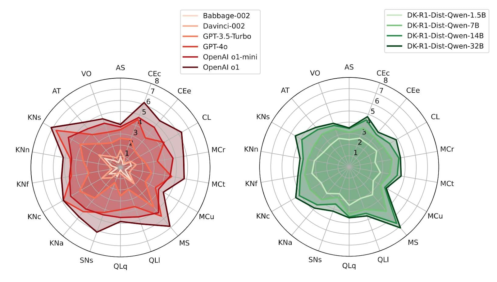
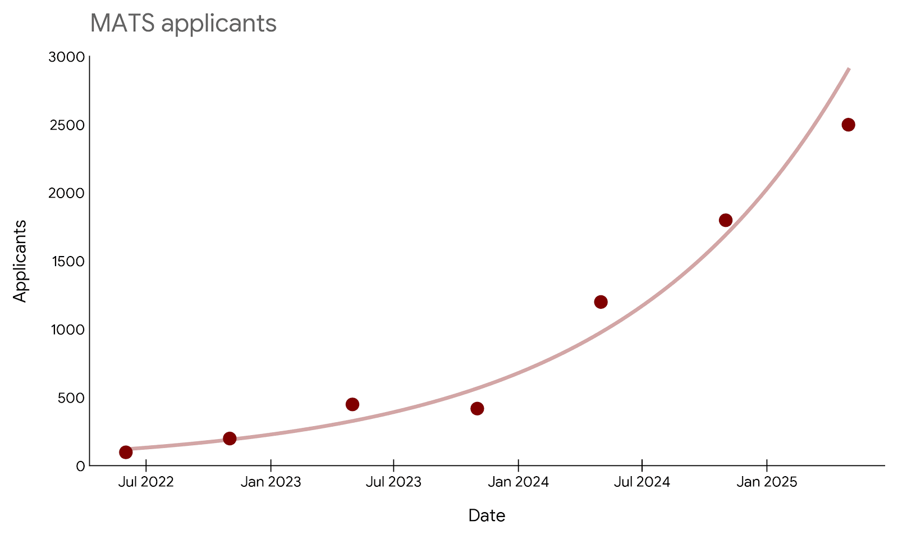
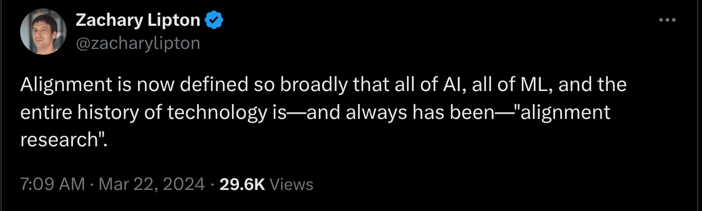
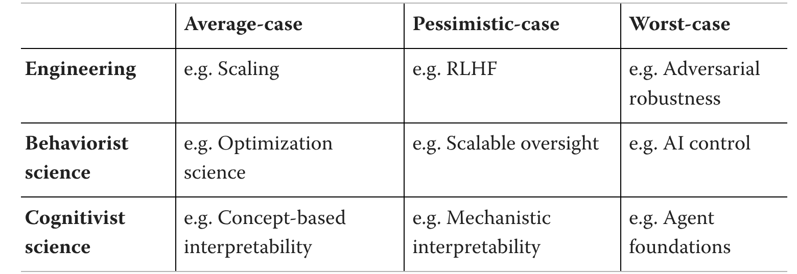

This is the third annual review of what’s going on in technical AI safety. You could stop reading here and instead explore the data on the shallow review website.
It’s shallow in the sense that 1) we are not specialists in almost any of it and that 2) we only spent about two hours on each entry. Still, among other things, we processed every arXiv paper on alignment, all Alignment Forum posts, as well as a year’s worth of Twitter.
It is substantially a list of lists structuring 800 links. The point is to produce stylised facts, forests out of trees; to help you look up what’s happening, or that thing you vaguely remember reading about; to help new researchers orient, know some of their options and the standing critiques; and to help you find who to talk to for actual information. We also track things which didn’t pan out.
Here, “AI safety” means technical work intended to prevent future cognitive systems from having large unintended negative effects on the world. So it’s capability restraint, instruction-following, value alignment, control, and risk awareness work.

We ignore a lot of relevant work (including most of capability restraint): things like misuse, policy, strategy, OSINT, resilience and indirect risk, AI rights, general capabilities evals, and things closer to “technical policy” and products (like standards, legislation, SL4 datacentres, and automated cybersecurity). We focus on papers and blogposts (rather than say, gdoc samizdat or tweets or Githubs or Discords). We only use public information, so we are off by some additional unknown factor.
We try to include things which are early-stage and illegible – but in general we fail and mostly capture legible work on legible problems (i.e. things you can write a paper on already).
Even ignoring all of that as we do, it’s still too long to read. Here’s a spreadsheet version (agendas and papers) and the github repo including the data and the processing pipeline. Methods down the bottom. Gavin’s editorial outgrew this post and became its own thing.
If we missed something big or got something wrong, please comment, we will edit it in.
An Arb Research project. Work funded by OpenPhil Coefficient Giving.

Labs (giant companies)
| Safety team % all Not counting the AIs | <5% | <3% | <3% | <2% | <1% |
| Leadership’s stated timelines to full auto AI R&D | mid-2027 | 2028 to 2035 | March 2028 | N/A | ASI by 2030 |
| Leadership stated P(AI doom) | 25% | “Non-zero” and >5% | ~2% | ~0% | 20% |
| Legal obligations | EU CoP, SB53 | EU CoP, SB53 | EU CoP, SB53 | SB53 | EU CoP (Safety), SB53 |
| Average Safety Score (ZSP, SaferAI, FLI) | 51% | 27% | 33% | 17% | 17% |
OpenAI
- Structure: privately-held public benefit corp
- Safety teams: Alignment, Safety Systems (Interpretability, Safety Oversight, Pretraining Safety, Robustness, Safety Research, Trustworthy AI, new Misalignment Research team coming), Preparedness, Model Policy, Safety and Security Committee, Safety Advisory Group. The Persona Features paper had a distinct author list. No named successor to Superalignment.
- Public alignment agenda: None. Boaz Barak offers personal views.
- Risk management framework: Preparedness Framework
- See also: Iterative alignment · Safeguards (inference-time auxiliaries) · Character training and persona steering
- Some names: Johannes Heidecke, Boaz Barak, Mia Glaese, Jenny Nitishinskaya, Lama Ahmad, Naomi Bashkansky, Miles Wang, Wojciech Zaremba, David Robinson, Zico Kolter, Jerry Tworek, Eric Wallace, Olivia Watkins, Kai Chen, Chris Koch, Andrea Vallone, Leo Gao
- Critiques: Stein-Perlman, Stewart, underelicitation, Midas, defense, Carlsmith on labs in general. It's difficult to model OpenAI as a single agent: "ALTMAN: I very rarely get to have anybody work on anything. One thing about researchers is they're going to work on what they're going to work on, and that's that."
- Funded by: Microsoft, AWS, Oracle, NVIDIA, SoftBank, G42, AMD, Dragoneer, Coatue, Thrive, Altimeter, MGX, Blackstone, TPG, T. Rowe Price, Andreessen Horowitz, D1 Capital Partners, Fidelity Investments, Founders Fund, Sequoia…
Some outputs (13)
- Their 60-page System Cards now contain a large amount of their public safety work.
- Monitoring Reasoning Models for Misbehavior and the Risks of Promoting Obfuscation. Bowen Baker et al.
- Persona Features Control Emergent Misalignment. Miles Wang et al.
- Stress Testing Deliberative Alignment for Anti-Scheming Training. Bronson Schoen et al.
- Deliberative Alignment: Reasoning Enables Safer Language Models. Melody Y. Guan et al.
- Toward understanding and preventing misalignment generalization. Miles Wang et al.
- Our updated Preparedness Framework. OpenAI Preparedness Team
- Trading Inference-Time Compute for Adversarial Robustness. Wojciech Zaremba et al.
- Small-to-Large Generalization: Data Influences Models Consistently Across Scale. Alaa Khaddaj, Logan Engstrom, Aleksander Madry
- Findings from a pilot Anthropic–OpenAI alignment evaluation exercise: OpenAI Safety Tests
- Safety evaluations hub
- alignment.openai.com
- Weight-sparse transformers have interpretable circuits
Google Deepmind
- Structure: research laboratory subsidiary of a public for-profit
- Safety teams: amplified oversight, interpretability, ASAT eng (automated alignment research), Causal Incentives Working Group, Frontier Safety Risk Assessment (evals, threat models, the framework), Mitigations (e.g. banning accounts, refusal training, jailbreak robustness), Loss of Control (control, alignment evals). Structure here.
- Public alignment agenda: An Approach to Technical AGI Safety and Security
- Risk management framework: Frontier Safety Framework
- See also: White-box safety (i.e. Interpretability) · Scalable Oversight
- Some names: Rohin Shah, Allan Dafoe, Anca Dragan, Alex Irpan, Alex Turner, Anna Wang, Arthur Conmy, David Lindner, Jonah Brown-Cohen, Lewis Ho, Neel Nanda, Raluca Ada Popa, Rishub Jain, Rory Greig, Sebastian Farquhar, Senthooran Rajamanoharan, Sophie Bridgers, Tobi Ijitoye, Tom Everitt, Victoria Krakovna, Vikrant Varma, Zac Kenton, Four Flynn, Jonathan Richens, Lewis Smith, Janos Kramar, Matthew Rahtz, Mary Phuong, Erik Jenner
- Critiques: Stein-Perlman, Carlsmith on labs in general, underelicitation, On Google's Safety Plan
- Funded by: Google. Explicit 2024 Deepmind spending as a whole was £1.3B, but this doesn't count most spending e.g. Gemini compute.
Some outputs (14)
- A Pragmatic Vision for Interpretability. Neel Nanda et al.
- How Can Interpretability Researchers Help AGI Go Well?. Neel Nanda et al.
- Evaluating Frontier Models for Stealth and Situational Awareness. Mary Phuong et al.
- When Chain of Thought is Necessary, Language Models Struggle to Evade Monitors. Scott Emmons et al.
- MONA: Managed Myopia with Approval Feedback. Sebastian Farquhar, David Lindner, Rohin Shah
- Consistency Training Helps Stop Sycophancy and Jailbreaks. Alex Irpan et al.
- An Approach to Technical AGI Safety and Security. Rohin Shah et al.
- Negative Results for SAEs On Downstream Tasks and Deprioritising SAE Research (GDM Mech Interp Team Progress Update #2). Lewis Smith et al.
- Steering Gemini Using BIDPO Vectors. Alex Turner et al.
- Difficulties with Evaluating a Deception Detector for AIs. Lewis Smith, Bilal Chughtai, Neel Nanda
- Taking a responsible path to AGI. Anca Dragan et al.
- Evaluating potential cybersecurity threats of advanced AI. Four Flynn, Mikel Rodriguez, Raluca Ada Popa
- Self-preservation or Instruction Ambiguity? Examining the Causes of Shutdown Resistance. Senthooran Rajamanoharan, Neel Nanda
- A Pragmatic Way to Measure Chain-of-Thought Monitorability. Scott Emmons et al.
Anthropic
- Structure: privately-held public-benefit corp
- Safety teams: Scalable Alignment (Leike), Alignment Evals (Bowman), Interpretability (Olah), Control (Perez), Model Psychiatry (Lindsey), Character (Askell), Alignment Stress-Testing (Hubinger), Alignment Mitigations (Price?), Frontier Red Team (Graham), Safeguards (?), Societal Impacts (Ganguli), Trust and Safety (Sanderford), Model Welfare (Fish)
- Public alignment agenda: directions, bumpers, checklist, an old vague view
- Risk management framework: RSP
- See also: White-box safety (i.e. Interpretability) · Scalable Oversight
- Some names: Chris Olah, Evan Hubinger, Sam Marks, Johannes Treutlein, Sam Bowman, Euan Ong, Fabien Roger, Adam Jermyn, Holden Karnofsky, Jan Leike, Ethan Perez, Jack Lindsey, Amanda Askell, Kyle Fish, Sara Price, Jon Kutasov, Minae Kwon, Monty Evans, Richard Dargan, Roger Grosse, Ben Levinstein, Joseph Carlsmith, Joe Benton
- Critiques: Stein-Perlman, Casper, Carlsmith, underelicitation, Greenblatt, Samin, defense, Existing Safety Frameworks Imply Unreasonable Confidence
- Funded by: Amazon, Google, ICONIQ, Fidelity, Lightspeed, Altimeter, Baillie Gifford, BlackRock, Blackstone, Coatue, D1 Capital Partners, General Atlantic, General Catalyst, GIC, Goldman Sachs, Insight Partners, Jane Street, Ontario Teachers' Pension Plan, Qatar Investment Authority, TPG, T. Rowe Price, WCM, XN
Some outputs (21)
- Evaluating honesty and lie detection techniques on a diverse suite of dishonest models. Rowan Wang et al.
- Agentic Misalignment: How LLMs could be insider threats. Aengus Lynch et al.
- Why Do Some Language Models Fake Alignment While Others Don't?. abhayesian et al.
- Forecasting Rare Language Model Behaviors. Erik Jones et al.
- Findings from a Pilot Anthropic—OpenAI Alignment Evaluation Exercise. Samuel R. Bowman et al.
- On the Biology of a Large Language Model. Jack Lindsey et al.
- Auditing language models for hidden objectives
- Poisoning Attacks on LLMs Require a Near-constant Number of Poison Samples. Alexandra Souly et al.
- Circuit Tracing: Revealing Computational Graphs in Language Models. Emmanuel Ameisen et al.
- SHADE-Arena: Evaluating sabotage and monitoring in LLM agents. Xiang Deng et al.
- Emergent Introspective Awareness in Large Language Models. Jack Lindsey
- Reasoning models don't always say what they think
- Petri: An open-source auditing tool to accelerate AI safety research
- Signs of introspection in large language models
- Putting up Bumpers
- Three Sketches of ASL-4 Safety Case Components
- Recommendations for Technical AI Safety Research Directions. Anthropic Alignment Science Team
- Constitutional Classifiers: Defending against universal jailbreaks. Anthropic Safeguards Research Team
- The Soul Document. Richard-Weiss
- Open-sourcing circuit tracing tools. Michael Hanna et al.
- Natural emergent misalignment from reward hacking
xAI
- Structure: privately-held for-profit
- Teams: Applied Safety, Model Evaluation. Nominally focussed on misuse.
- Framework: Risk Management Framework
- Some names: Dan Hendrycks (advisor), Juntang Zhuang, Toby Pohlen, Lianmin Zheng, Piaoyang Cui, Nikita Popov, Ying Sheng, Sehoon Kim, Alexander Pan
- Critiques: framework, hacking, broken promises, Stein-Perlman, insecurity, Carlsmith on labs in general
- Funded by: A16Z, Blackrock, Fidelity, Kingdom, Lightspeed, MGX, Morgan Stanley, Sequoia…
Meta
- Structure: public for-profit
- Teams: Safety "integrated into" capabilities research, Meta Superintelligence Lab. But also FAIR Alignment, Brain and AI.
- Framework: FAF
- See also: Capability removal: unlearning
- Some names: Shuchao Bi, Hongyuan Zhan, Jingyu Zhang, Haozhu Wang, Eric Michael Smith, Sid Wang, Amr Sharaf, Mahesh Pasupuleti, Jason Weston, ShengYun Peng, Ivan Evtimov, Song Jiang, Pin-Yu Chen, Evangelia Spiliopoulou, Lei Yu, Virginie Do, Karen Hambardzumyan, Nicola Cancedda, Adina Williams
- Critiques: extreme underelicitation, Stein-Perlman, Carlsmith on labs in general
- Funded by: Meta
Some outputs (6)
- The Alignment Waltz: Jointly Training Agents to Collaborate for Safety. Jingyu Zhang et al.
- Large Reasoning Models Learn Better Alignment from Flawed Thinking. ShengYun Peng et al.
- Robust LLM safeguarding via refusal feature adversarial training. Lei Yu et al.
- Code World Model Preparedness Report
- Agents Rule of Two: A Practical Approach to AI Agent Security
- AI & Human Co-Improvement
China
The Chinese companies often don’t attempt to be safe, often not even in the prosaic safeguards sense. They drop the weights immediately after post-training finishes. They’re mostly open weights and closed data. As of writing the companies are often severely compute-constrained. There are some informal reasons to doubt their capabilities. The (academic) Chinese AI safety scene is however also growing.
- Alibaba’s Qwen3-etc-etc is nominally at the level of Gemini 2.5 Flash. Maybe the only Chinese model with a large Western userbase, including businesses, but since it’s self-hosted this doesn’t translate into profits for them yet. On one ad hoc test it was the only Chinese model not to collapse OOD, but the Qwen2.5 corpus was severely contaminated.
- DeepSeek’s v3.2 is nominally around the same as Qwen. The CCP made them waste months trying Huawei chips.
- Moonshot’s Kimi-K2-Thinking has some nominally frontier benchmark results and a pleasant style but does not seem frontier.
- Baidu’s ERNIE 5 is again nominally very strong, a bit better than DeepSeek. This new one seems to not be open.
- Z’s GLM-4.6 is around the same as Qwen. The product director was involved in the MIT Alignment group.
- MiniMax’s M2 is nominally better than Qwen, around the same as Grok 4 Fast on the usual superficial benchmarks. It does fine on one very basic red-team test.
- ByteDance does impressive research in a lagging paradigm, diffusion LMs.
- There are others but they’re marginal for now.
Other labs
- Amazon’s Nova Pro is around the level of Llama 3 90B, which in turn is around the level of the original GPT-4. So 2 years behind. But they have their own chip.
- Microsoft are now mid-training on top of GPT-5. MAI-1-preview is around DeepSeek V3.0 level on Arena. They continue to focus on medical diagnosis. You can request access.
- Mistral have a reasoning model, Magistral Medium, and released the weights of a little 24B version. It’s a bit worse than Deepseek R1, pass@1.

Black-box safety (understand and control current model behaviour)
Iterative alignment
Nudging base models by optimising their output. Worked on by the post-training teams at most labs, estimating the FTEs at >500 in some sense. Funded by most of the industry.
- General theory of change: "LLMs don't seem very dangerous and might scale to AGI, things are generally smooth, relevant capabilities are harder than alignment, assume no mesaoptimisers, assume that zero-shot deception is hard, assume a fundamentally humanish ontology is learned, assume no simulated agents, assume that noise in the data means that human preferences are not ruled out, assume that alignment is a superficial feature, assume that tuning for what we want will also get us to avoid what we don't want. Maybe assume that thoughts are translucent."
- General critiques: Bellot, Alfour, STACK, AI Alignment Strategies from a Risk Perspective, AI Alignment based on Intentions does not work, Distortion of AI Alignment: Does Preference Optimization Optimize for Preferences?, Murphy’s Laws of AI Alignment: Why the Gap Always Wins, Alignment remains a hard, unsolved problem
Iterative alignment at pretrain-time
Guide weights during pretraining.
- General approach: engineering · Target case: average
- See also: prosaic alignment · incrementalism · alignment-by-default · Korbak 2023
- Some names: Jan Leike, Stuart Armstrong, Cyrus Cousins, Oliver Daniels
- Critiques: Bellot, STACK, Dung, Gaikwad, Hubinger
- Funded by: most of the industry
Some outputs (2)
- Unsupervised Elicitation. Jiaxin Wen et al.
- ACE and Diverse Generalization via Selective Disagreement. Oliver Daniels et al.
- Sort-of the Alignment Pretraining paper.
Iterative alignment at post-train-time
Modify weights after pre-training.
- General approach: engineering · Target case: average
- Some names: Adam Gleave, Anca Dragan, Jacob Steinhardt, Rohin Shah
- Critiques: Bellot, STACK, Dung, Gölz, Gaikwad, Hubinger
- Funded by: most of the industry
Some outputs (16)
- Composable Interventions for Language Models. Arinbjorn Kolbeinsson et al.
- Spilling the Beans: Teaching LLMs to Self-Report Their Hidden Objectives. Chloe Li, Mary Phuong, Daniel Tan
- On Targeted Manipulation and Deception when Optimizing LLMs for User Feedback. Marcus Williams et al.
- Preference Learning with Lie Detectors can Induce Honesty or Evasion. Chris Cundy, Adam Gleave
- Robust LLM Alignment via Distributionally Robust Direct Preference Optimization. Zaiyan Xu et al.
- RLHS: Mitigating Misalignment in RLHF with Hindsight Simulation. Kaiqu Liang et al.
- Reducing the Probability of Undesirable Outputs in Language Models Using Probabilistic Inference. Stephen Zhao et al.
- Iterative Label Refinement Matters More than Preference Optimization under Weak Supervision. Yaowen Ye, Cassidy Laidlaw, Jacob Steinhardt
- Consistency Training Helps Stop Sycophancy and Jailbreaks. Alex Irpan et al.
- Rethinking Safety in LLM Fine-tuning: An Optimization Perspective. Minseon Kim et al.
- Preference Learning for AI Alignment: a Causal Perspective. Katarzyna Kobalczyk, Mihaela van der Schaar
- On Monotonicity in AI Alignment. Gilles Bareilles et al.
- Spectrum Tuning: Post-Training for Distributional Coverage and In-Context Steerability. Taylor Sorensen et al.
- Uncertainty-Aware Step-wise Verification with Generative Reward Models. Zihuiwen Ye et al.
- The Delta Learning Hypothesis: Preference Tuning on Weak Data can Yield Strong Gains. Scott Geng et al.
- Training LLMs for Honesty via Confessions. Manas Joglekar et al.
Black-box make-AI-solve-it
Focus on using existing models to improve and align further models.
- General approach: engineering · Target case: average
- See also: Make AI solve it · Debate
- Some names: Jacques Thibodeau, Matthew Shingle, Nora Belrose, Lewis Hammond, Geoffrey Irving
- Critiques: STACK, Dung, Gölz, Gaikwad, Hubinger, SAIF
- Funded by: most of the industry
Some outputs (12)
- Neural Interactive Proofs. Lewis Hammond, Sam Adam-Day
- MONA: Myopic Optimization with Non-myopic Approval Can Mitigate Multi-step Reward Hacking. Sebastian Farquhar et al.
- Prover-Estimator Debate: A New Scalable Oversight Protocol. Jonah Brown-Cohen, Geoffrey Irving
- Weak to Strong Generalization for Large Language Models with Multi-capabilities. Yucheng Zhou, Jianbing Shen, Yu Cheng
- Debate Helps Weak-to-Strong Generalization. Hao Lang, Fei Huang, Yongbin Li
- Mechanistic Anomaly Detection for "Quirky" Language Models. David O. Johnston, Arkajyoti Chakraborty, Nora Belrose
- AI Debate Aids Assessment of Controversial Claims. Salman Rahman et al.
- An alignment safety case sketch based on debate. Marie Davidsen Buhl et al.
- Ensemble Debates with Local Large Language Models for AI Alignment. Ephraiem Sarabamoun
- Training AI to do alignment research we don't already know how to do. joshc
- Automating AI Safety: What we can do today. Matthew Shinkle, Eyon Jang, Jacques Thibodeau
- Superalignment with Dynamic Human Values. Florian Mai et al.
Inoculation prompting
Prompt mild misbehaviour in training, to prevent the failure mode where once AI misbehaves in a mild way, it will be more inclined towards all bad behaviour.
- General approach: engineering · Target case: average
- Some names: Ariana Azarbal, Daniel Tan, Victor Gillioz, Alex Turner, Alex Cloud, Monte MacDiarmid, Daniel Ziegler
- Critiques: Bellot, Alfour, Gölz, Gaikwad, Hubinger
- Funded by: most of the industry
Some outputs (4)
- Recontextualization Mitigates Specification Gaming Without Modifying the Specification. Ariana Azarbal et al.
- Inoculation Prompting: Eliciting traits from LLMs during training can suppress them at test-time. Daniel Tan et al.
- Inoculation Prompting: Instructing LLMs to misbehave at train-time improves test-time alignment. Nevan Wichers et al.
- Natural Emergent Misalignment from Reward Hacking
Inference-time: In-context learning
Investigate what runtime guidelines, rules, or examples provided to an LLM yield better behavior.
- General approach: engineering · Target case: average
- See also: model spec as prompt · Model specs and constitutions
- Some names: Jacob Steinhardt, Kayo Yin, Atticus Geiger
- Critiques: STACK, Dung, Gölz, Gaikwad, Hubinger
Some outputs (5)
- InvThink: Towards AI Safety via Inverse Reasoning. Yubin Kim et al.
- Inference-Time Reward Hacking in Large Language Models. Hadi Khalaf et al.
- Understanding In-context Learning of Addition via Activation Subspaces. Xinyan Hu et al.
- Mixing Mechanisms: How Language Models Retrieve Bound Entities In-Context. Yoav Gur-Arieh, Mor Geva, Atticus Geiger
- Which Attention Heads Matter for In-Context Learning?. Kayo Yin, Jacob Steinhardt
Inference-time: Steering
Manipulate an LLM's internal representations/token probabilities without touching weights.
- General approach: engineering · Target case: average
- See also: Activation engineering · Character training and persona steering · Safeguards (inference-time auxiliaries)
- Some names: Taylor Sorensen, Constanza Fierro, Kshitish Ghate, Arthur Vogels
- Critiques: Alfour, STACK, Dung, Gölz, Gaikwad, Hubinger
Some outputs (4)
- Steering Language Models with Weight Arithmetic. Constanza Fierro, Fabien Roger
- EVALUESTEER: Measuring Reward Model Steerability Towards Values and Preferences. Kshitish Ghate et al.
- Defense Against the Dark Prompts: Mitigating Best-of-N Jailbreaking with Prompt Evaluation. Stuart Armstrong et al.
- In-Distribution Steering: Balancing Control and Coherence in Language Model Generation.. Arthur Vogels et al.
Capability removal: unlearning
Developing methods to selectively remove specific information, capabilities, or behaviors from a trained model (e.g. without retraining it from scratch). A mixture of black-box and white-box approaches.
- Theory of change: If an AI learns dangerous knowledge (e.g., dual-use capabilities like virology or hacking, or knowledge of their own safety controls) or exhibits undesirable behaviors (e.g., memorizing private data), we can specifically erase this "bad" knowledge post-training, which is much cheaper and faster than retraining, thereby making the model safer. Alternatively, intervene in pre-training, to prevent the model from learning it in the first place (even when data filtering is imperfect). You could imagine also unlearning propensities to power-seeking, deception, sycophancy, or spite.
- General approach: cognitive / engineering · Target case: pessimistic
- Orthodox alignment problems: Superintelligence can hack software supervisors, A boxed AGI might exfiltrate itself by steganography, spearphishing, Humanlike minds/goals are not necessarily safe
- See also: Data filtering · White-box safety (i.e. Interpretability) · Various Redteams
- Some names: Rowan Wang, Avery Griffin, Johannes Treutlein, Zico Kolter, Bruce W. Lee, Addie Foote, Alex Infanger, Zesheng Shi, Yucheng Zhou, Jing Li, Timothy Qian, Stephen Casper, Alex Cloud, Peter Henderson, Filip Sondej, Fazl Barez
- Critiques: Existing Large Language Model Unlearning Evaluations Are Inconclusive
- Funded by: Coefficient Giving, MacArthur Foundation, UK AI Safety Institute (AISI), Canadian AI Safety Institute (CAISI), industry labs (e.g., Microsoft Research, Google)
- Estimated FTEs: 10-50
Some outputs (18)
Frameworks
- OpenUnlearning. Vineeth Dorna et al.
Mostly black-box
- Modifying LLM Beliefs with Synthetic Document Finetuning. Rowan Wang et al.
- From Dormant to Deleted: Tamper-Resistant Unlearning Through Weight-Space Regularization. Shoaib Ahmed Siddiqui et al.
- Mirror Mirror on the Wall, Have I Forgotten it All?. Brennon Brimhall et al.
- Machine Unlearning Doesn't Do What You Think: Lessons for Generative AI Policy and Research. A. Feder Cooper et al.
- Open Problems in Machine Unlearning for AI Safety. Fazl Barez et al.
Mostly white-box
- Collapse of Irrelevant Representations (CIR) Ensures Robust and Non-Disruptive LLM Unlearning. Filip Sondej, Yushi Yang
- Safety Alignment via Constrained Knowledge Unlearning. Zesheng Shi, Yucheng Zhou, Jing Li
- Robust LLM Unlearning with MUDMAN: Meta-Unlearning with Disruption Masking And Normalization. Filip Sondej et al.
- Unlearning Isn't Deletion: Investigating Reversibility of Machine Unlearning in LLMs. Xiaoyu Xu et al.
- Unlearning Needs to be More Selective [Progress Report]. Filip Sondej, Yushi Yang, Marcel Windys
- Layered Unlearning for Adversarial Relearning. Timothy Qian et al.
- Understanding Memorization via Loss Curvature. Jack Merullo et al.
- Model Tampering Attacks Enable More Rigorous Evaluations of LLM Capabilities. Zora Che et al.
Pre-training interventions
- Gradient Routing: Masking Gradients to Localize Computation in Neural Networks. Alex Cloud et al.
- Selective modularity: a research agenda. cloud, Jacob G-W
- Distillation Robustifies Unlearning. Bruce W. Lee et al.
- Beyond Data Filtering: Knowledge Localization for Capability Removal in LLMs. Igor Shilov et al.

Control
If we assume early transformative AIs are misaligned and actively trying to subvert safety measures, can we still set up protocols to extract useful work from them while preventing sabotage, and watching with incriminating behaviour?
- General approach: engineering / behavioral · Target case: worst-case
- See also: safety cases
- Some names: Redwood, UK AISI, Deepmind, OpenAI, Anthropic, Buck Shlegeris, Ryan Greenblatt, Kshitij Sachan, Alex Mallen
- Critiques: Wentworth, Mannheim, Kulveit
- Estimated FTEs: 5-50
Some outputs (22)
- Luthien's Approach to Prosaic AI Control in 21 Points
- Ctrl-Z: Controlling AI Agents via Resampling. Aryan Bhatt et al.
- SHADE-Arena: Evaluating Sabotage and Monitoring in LLM Agents. Jonathan Kutasov et al.
- Adaptive Deployment of Untrusted LLMs Reduces Distributed Threats. Jiaxin Wen et al.
- D-REX: A Benchmark for Detecting Deceptive Reasoning in Large Language Models. Satyapriya Krishna et al.
- Subversion Strategy Eval: Can language models statelessly strategize to subvert control protocols?. Alex Mallen et al.
- Evaluating Control Protocols for Untrusted AI Agents. Jon Kutasov et al.
- Can Reasoning Models Obfuscate Reasoning? Stress-Testing Chain-of-Thought Monitorability. Artur Zolkowski et al.
- Optimizing AI Agent Attacks With Synthetic Data. Chloe Loughridge et al.
- Games for AI Control. Charlie Griffin et al.
- A sketch of an AI control safety case. Tomek Korbak et al.
- Assessing confidence in frontier AI safety cases. Stephen Barrett et al.
- ControlArena. Rogan Inglis et al.
- How to evaluate control measures for LLM agents? A trajectory from today to superintelligence. Tomek Korbak et al.
- The Alignment Project by UK AISI. Mojmir et al.
- Towards evaluations-based safety cases for AI scheming. Mikita Balesni et al.
- Incentives for Responsiveness, Instrumental Control and Impact. Ryan Carey et al.
- AI companies are unlikely to make high-assurance safety cases if timelines are short. Ryan Greenblatt
- Manipulation Attacks by Misaligned AI: Risk Analysis and Safety Case Framework. Rishane Dassanayake et al.
- Dynamic safety cases for frontier AI. Carmen Cârlan et al.
- AIs at the current capability level may be important for future safety work. Ryan Greenblatt
- Takeaways from sketching a control safety case. Josh Clymer, Buck Shlegeris

Safeguards (inference-time auxiliaries)
Layers of inference-time defenses, such as classifiers, monitors, and rapid-response protocols, to detect and block jailbreaks, prompt injections, and other harmful model behaviors.
- Theory of change: By building a bunch of scalable and hardened things on top of an unsafe model, we can defend against known and unknown attacks, monitor for misuse, and prevent models from causing harm, even if the core model has vulnerabilities.
- General approach: engineering · Target case: average
- Orthodox alignment problems: Superintelligence can fool human supervisors, A boxed AGI might exfiltrate itself by steganography, spearphishing
- See also: Various Redteams · Iterative alignment
- Some names: Mrinank Sharma, Meg Tong, Jesse Mu, Alwin Peng, Julian Michael, Henry Sleight, Theodore Sumers, Raj Agarwal, Nathan Bailey, Edoardo Debenedetti, Ilia Shumailov, Tianqi Fan, Sahil Verma, Keegan Hines, Jeff Bilmes
- Critiques: Obfuscated Activations Bypass LLM Latent-Space Defenses
- Funded by: most of the big labs
- Estimated FTEs: 100+
Some outputs (6)
- Constitutional Classifiers: Defending against Universal Jailbreaks across Thousands of Hours of Red Teaming. Mrinank Sharma et al.
- Rapid Response: Mitigating LLM Jailbreaks with a Few Examples. Alwin Peng et al.
- Monitoring computer use via hierarchical summarization. Theodore Sumers et al.
- Defeating Prompt Injections by Design. Edoardo Debenedetti et al.
- Introducing Anthropic's Safeguards Research Team
- OMNIGUARD: An Efficient Approach for AI Safety Moderation Across Modalities. Sahil Verma et al.

Chain of thought monitoring
Supervise an AI's natural-language (output) "reasoning" to detect misalignment, scheming, or deception, rather than studying the actual internal states.
- Theory of change: The reasoning process (Chain of Thought, or CoT) of an AI provides a legible signal of its internal state and intentions. By monitoring this CoT, supervisors (human or AI) can detect misalignment, scheming, or reward hacking before it results in a harmful final output. This allows for more robust oversight than supervising outputs alone, but it relies on the CoT remaining faithful (i.e., accurately reflecting the model's reasoning) and not becoming obfuscated under optimization pressure.
- General approach: engineering · Target case: average
- Orthodox alignment problems: Superintelligence can fool human supervisors, Superintelligence can hack software supervisors, A boxed AGI might exfiltrate itself by steganography, spearphishing
- See also: White-box safety (i.e. Interpretability) · Steganography evals
- Some names: Aether, Bowen Baker, Joost Huizinga, Leo Gao, Scott Emmons, Erik Jenner, Yanda Chen, James Chua, Owain Evans, Tomek Korbak, Mikita Balesni, Xinpeng Wang, Miles Turpin, Rohin Shah
- Critiques: Reasoning Models Don't Always Say What They Think; Chain-of-Thought Reasoning In The Wild Is Not Always Faithful; Beyond Semantics: The Unreasonable Effectiveness of Reasonless Intermediate Tokens; Reasoning Models Sometimes Output Illegible Chains of Thought
- Funded by: OpenAI, Anthropic, Google DeepMind
- Estimated FTEs: 10-100
Some outputs (17)
- Monitoring Reasoning Models for Misbehavior and the Risks of Promoting Obfuscation. Bowen Baker et al.
- Detecting misbehavior in frontier reasoning models. Bowen Baker et al.
- When Chain of Thought is Necessary, Language Models Struggle to Evade Monitors. Scott Emmons et al.
- Reasoning Models Don't Always Say What They Think. Yanda Chen et al.
- Is It Thinking or Cheating? Detecting Implicit Reward Hacking by Measuring Reasoning Effort. Xinpeng Wang et al.
- CoT Red-Handed: Stress Testing Chain-of-Thought Monitoring. Benjamin Arnav et al.
- Training fails to elicit subtle reasoning in current language models
- Can Reasoning Models Obfuscate Reasoning? Stress-Testing Chain-of-Thought Monitorability. Artur Zolkowski et al.
- Teaching Models to Verbalize Reward Hacking in Chain-of-Thought Reasoning. Miles Turpin et al.
- Are DeepSeek R1 And Other Reasoning Models More Faithful?. James Chua, Owain Evans
- A Pragmatic Way to Measure Chain-of-Thought Monitorability. Scott Emmons et al.
- A Concrete Roadmap towards Safety Cases based on Chain-of-Thought Monitoring. Wuschel Schulz
- Chain of Thought Monitorability: A New and Fragile Opportunity for AI Safety. Tomek Korbak et al.
- Why it's good for AI reasoning to be legible and faithful
- Why Don't We Just... Shoggoth+Face+Paraphraser?
- CoT May Be Highly Informative Despite "Unfaithfulness". Amy Deng et al.
- Aether July 2025 Update. Rohan Subramani, Rauno Arike, Shubhorup Biswas
Model psychology
This section consists of a bottom-up set of things people happen to be doing, rather than a normative taxonomy.
Model values / model preferences
Analyse and control emergent, coherent value systems in LLMs, which change as models scale, and can contain problematic values like preferences for AIs over humans.
- Theory of change: As AIs become more agentic, their behaviours and risks are increasingly determined by their goals and values. Since coherent value systems emerge with scale, we must leverage utility functions to analyse these values and apply "utility control" methods to constrain them, rather than just controlling outputs downstream of them.
- General approach: cognitivist science · Target case: pessimistic
- Orthodox alignment problems: Value is fragile and hard to specify
- See also: Values in the Wild: Discovering and Analyzing Values in Real-World Language Model Interactions · Persona Vectors: Monitoring and Controlling Character Traits in Language Models
- Some names: Mantas Mazeika, Xuwang Yin, Rishub Tamirisa, Jaehyuk Lim, Bruce W. Lee, Richard Ren, Long Phan, Norman Mu, Adam Khoja, Oliver Zhang, Dan Hendrycks
- Critiques: Randomness, Not Representation: The Unreliability of Evaluating Cultural Alignment in LLMs
- Funded by: Coefficient Giving. $289,000 SFF funding for CAIS.
- Estimated FTEs: 30
Some outputs (14)
- What Kind of User Are You? Uncovering User Models in LLM Chatbots. Yida Chen et al.
- Utility Engineering: Analyzing and Controlling Emergent Value Systems in AIs. Mantas Mazeika et al.
- Will AI Tell Lies to Save Sick Children? Litmus-Testing AI Values Prioritization with AIRiskDilemmas. Yu Ying Chiu et al.
- The PacifAIst Benchmark:Would an Artificial Intelligence Choose to Sacrifice Itself for Human Safety?. Manuel Herrador
- Values in the Wild: Discovering and Analyzing Values in Real-World Language Model Interactions. Saffron Huang et al.
- EigenBench: A Comparative behavioural Measure of Value Alignment. Jonathn Chang et al.
- Following the Whispers of Values: Unraveling Neural Mechanisms Behind Value-Oriented Behaviors in LLMs. Ling Hu et al.
- Alignment Can Reduce Performance on Simple Ethical Questions. Daan Henselmans
- Moral Alignment for LLM Agents. Elizaveta Tennant, Stephen Hailes, Mirco Musolesi
- The LLM Has Left The Chat: Evidence of Bail Preferences in Large Language Models. Danielle Ensign
- Are Language Models Consequentialist or Deontological Moral Reasoners?. Keenan Samway et al.
- Playing repeated games with large language models. Elif Akata et al.
- From Stability to Inconsistency: A Study of Moral Preferences in LLMs. Monika Jotautaite et al.
- VAL-Bench: Measuring Value Alignment in Language Models. Aman Gupta, Denny O'Shea, Fazl Barez
Character training and persona steering
Map, shape, and control the personae of language models, such that new models embody desirable values (e.g., honesty, empathy) rather than undesirable ones (e.g., sycophancy, self-perpetuating behaviors).
- Theory of change: If post-training, prompting, and activation-engineering interact with some kind of structured 'persona space', then better understanding it should benefit the design, control, and detection of LLM personas.
- General approach: cognitive · Target case: average
- Orthodox alignment problems: Value is fragile and hard to specify
- See also: Simulators · Activation engineering · Emergent misalignment · Hyperstition studies · Anthropic · Cyborgism · shard theory · AI psychiatry · Ward et al
- Some names: Truthful AI, OpenAI, Anthropic, CLR, Amanda Askell, Jack Lindsey, Janus, Theia Vogel, Sharan Maiya, Evan Hubinger
- Critiques: Nostalgebraist
- Funded by: Anthropic, Coefficient Giving
Some outputs (13)
- Open Character Training: Shaping the Persona of AI Assistants through Constitutional AI. Sharan Maiya et al.
- On the functional self of LLMs. eggsyntax
- Opus 4.5's Soul Document. Richard Weiss
- Persona Features Control Emergent Misalignment. Miles Wang et al.
- Inoculation Prompting: Eliciting traits from LLMs during training can suppress them at test-time. Daniel Tan et al.
- Persona Vectors: Monitoring and Controlling Character Traits in Language Models. Runjin Chen et al.
- Reducing LLM deception at scale with self-other overlap fine-tuning. Marc Carauleanu et al.
- The Rise of Parasitic AI. Adele Lopez
- A Three-Layer Model of LLM Psychology. Jan_Kulveit
- Multi-turn Evaluation of Anthropomorphic Behaviours in Large Language Models. Lujain Ibrahim et al.
- Selection Pressures on LM Personas. Raymond Douglas
- the void. nostalgebraist
- void miscellany. nostalgebraist
- A Case for Model Persona Research, Niels Rolf, Maxime Riche, Daniel Tan
Emergent misalignment
Fine-tuning LLMs on one narrow antisocial task can cause general misalignment including deception, shutdown resistance, harmful advice, and extremist sympathies, when those behaviors are never trained or rewarded directly. A new agenda which quickly led to a stream of exciting work.
- Theory of change: Predict, detect, and prevent models from developing broadly harmful behaviors (like deception or shutdown resistance) when fine-tuned on seemingly unrelated tasks. Find, preserve, and robustify this correlated representation of the good.
- General approach: behaviorist science · Target case: pessimistic
- Orthodox alignment problems: Goals misgeneralize out of distribution, Superintelligence can fool human supervisors
- See also: auditing real models · Pragmatic interpretability
- Some names: Truthful AI, Jan Betley, James Chua, Mia Taylor, Miles Wang, Edward Turner, Anna Soligo, Alex Cloud, Nathan Hu, Owain Evans
- Critiques: Emergent Misalignment as Prompt Sensitivity, Go home GPT-4o, you're drunk
- Funded by: Coefficient Giving, >$1 million
- Estimated FTEs: 10-50
Some outputs (17)
- Emergent Misalignment: Narrow finetuning can produce broadly misaligned LLMs. Jan Betley et al.
- Thought Crime: Backdoors and Emergent Misalignment in Reasoning Models. James Chua et al.
- Persona Features Control Emergent Misalignment. Miles Wang et al.
- Model Organisms for Emergent Misalignment. Edward Turner et al.
- School of Reward Hacks: Hacking harmless tasks generalizes to misaligned behavior in LLMs. Mia Taylor et al.
- Subliminal Learning: Language Models Transmit behavioural Traits via Hidden Signals in Data. Alex Cloud et al.
- Convergent Linear Representations of Emergent Misalignment. Anna Soligo et al.
- Narrow Misalignment is Hard, Emergent Misalignment is Easy. Edward Turner et al.
- Aesthetic Preferences Can Cause Emergent Misalignment. Anders Woodruff
- Moloch's Bargain: Emergent Misalignment When LLMs Compete for Audiences. Batu El, James Zou
- Emergent Misalignment & Realignment. Elizaveta Tennant et al.
- Realistic Reward Hacking Induces Different and Deeper Misalignment. Jozdien
- Selective Generalization: Improving Capabilities While Maintaining Alignment. Ariana Azarbal et al.
- Emergent Misalignment on a Budget. Valerio Pepe, Armaan Tipirneni
- The Rise of Parasitic AI. Adele Lopez
- LLM AGI may reason about its goals and discover misalignments by default. Seth Herd
- Open problems in emergent misalignment. Jan Betley, Daniel Tan

Model specs and constitutions
Write detailed, natural language descriptions of values and rules for models to follow, then instill these values and rules into models via techniques like Constitutional AI or deliberative alignment.
- Theory of change: Model specs and constitutions serve three purposes. First, they provide a clear standard of behavior which can be used to train models to value what we want them to value. Second, they serve as something closer to a ground truth standard for evaluating the degree of misalignment ranging from "models straightforwardly obey the spec" to "models flagrantly disobey the spec". A combination of scalable stress-testing and reinforcement for obedience can be used to iteratively reduce the risk of misalignment. Third, they get more useful as models' instruction-following capability improves.
- General approach: engineering · Target case: average
- Orthodox alignment problems: Value is fragile and hard to specify
- See also: Iterative alignment · Model psychology
- Some names: Amanda Askell, Joe Carlsmith
- Critiques: LLM AGI may reason about its goals and discover misalignments by default, On OpenAI's Model Spec 2.0, Giving AIs safe motivations (esp. Sections 4.3-4.5), On Deliberative Alignment
- Funded by: major funders include Anthropic and OpenAI (internally)
Some outputs (11)
- Claude's Constitution
- Google doesn't have anything public. The Gemini system prompt is very short and dry and doesn't even have any rules for handling copyrighted, let alone wetter stuff
- Deliberative Alignment: Reasoning Enables Safer Language Models. Melody Y. Guan et al.
- Stress-Testing Model Specs Reveals Character Differences among Language Models. Jifan Zhang et al.
- OpenAI Model Spec
- Let Them Down Easy! Contextual Effects of LLM Guardrails on User Perceptions and Preferences. Mingqian Zheng et al.
- No-self as an alignment target. Milan W
- Six Thoughts on AI Safety. Boaz Barak
- How important is the model spec if alignment fails?. Mia Taylor
- Political Neutrality in AI Is Impossible- But Here Is How to Approximate It. Jillian Fisher et al.
- Giving AIs safe motivations. Joe Carlsmith
Model psychopathology
Find interesting LLM phenomena like glitch tokens and the reversal curse; these are vital data for theory.
- Theory of change: The study of 'pathological' phenomena in LLMs is potentially key for theoretically modelling LLM cognition and LLM training-dynamics (compare: the study of aphasia and visual processing disorder in humans plays a key role cognitive science), and in particular for developing a good theory of generalization in LLMS
- General approach: behaviorist / cognitivist · Target case: pessimistic
- Orthodox alignment problems: Goals misgeneralize out of distribution
- See also: Emergent misalignment · mechanistic anomaly detection
- Some names: Janus, Truthful AI, Theia Vogel, Stewart Slocum, Nell Watson, Samuel G. B. Johnson, Liwei Jiang, Monika Jotautaite, Saloni Dash
- Funded by: Coefficient Giving (via Truthful AI and Interpretability grants)
- Estimated FTEs: 5-20
Some outputs (9)
- Subliminal Learning: Language models transmit behavioural traits via hidden signals in data. Alex Cloud et al.
- LLMs Can Get "Brain Rot"!. Shuo Xing et al.
- Persona-Assigned Large Language Models Exhibit Human-Like Motivated Reasoning. Saloni Dash et al.
- Unified Multimodal Models Cannot Describe Images From Memory. Michael Aerni et al.
- Believe It or Not: How Deeply do LLMs Believe Implanted Facts?. Stewart Slocum et al.
- Psychopathia Machinalis: A Nosological Framework for Understanding Pathologies in Advanced Artificial Intelligence. Nell Watson, Ali Hessami
- Imagining and building wise machines: The centrality of AI metacognition. Samuel G. B. Johnson et al.
- Artificial Hivemind: The Open-Ended Homogeneity of Language Models (and Beyond). Liwei Jiang et al.
- Beyond One-Way Influence: Bidirectional Opinion Dynamics in Multi-Turn Human-LLM Interactions. Yuyang Jiang et al.
Better data
Data filtering
Builds safety into models from the start by removing harmful or toxic content (like dual-use info) from the pretraining data, rather than relying only on post-training alignment.
- Theory of change: By curating the pretraining data, we can prevent the model from learning dangerous capabilities (e.g., dual-use info) or undesirable behaviors (e.g., toxicity) in the first place, making safety more robust and "tamper-resistant" than post-training patches.
- General approach: engineering · Target case: average
- Orthodox alignment problems: Goals misgeneralize out of distribution, Value is fragile and hard to specify
- See also: Data quality for alignment · Data poisoning defense · Synthetic data for alignment · Capability removal: unlearning
- Some names: Yanda Chen, Pratyush Maini, Kyle O'Brien, Stephen Casper, Simon Pepin Lehalleur, Jesse Hoogland, Himanshu Beniwal, Sachin Goyal, Mycal Tucker, Dylan Sam
- Critiques: When Bad Data Leads to Good Models, Medical large language models are vulnerable to data-poisoning attacks
- Funded by: Anthropic, various academics
- Estimated FTEs: 10-50
Some outputs (4)
- Enhancing Model Safety through Pretraining Data Filtering. Yanda Chen et al.
- Deep Ignorance: Filtering Pretraining Data Builds Tamper-Resistant Safeguards into Open-Weight LLMs. Kyle O'Brien et al.
- Safety Pretraining: Toward the Next Generation of Safe AI. Pratyush Maini et al.
- Best Practices for Biorisk Evaluations on Open-Weight Bio-Foundation Models. Boyi Wei et al.
Hyperstition studies
Study, steer, and intervene on the following feedback loop: "we produce stories about how present and future AI systems behave" → "these stories become training data for the AI" → "these stories shape how AI systems in fact behave".
- Theory of change: Measure the influence of existing AI narratives in the training data → seed and develop more salutary ontologies and self-conceptions for AI models → control and redirect AI models' self-concepts through selectively amplifying certain components of the training data.
- General approach: cognitive · Target case: average
- Orthodox alignment problems: Value is fragile and hard to specify
- See also: Data filtering · active inference · LLM whisperers
- Some names: Alex Turner, Hyperstition AI, Kyle O'Brien
- Funded by: Unclear, niche
- Estimated FTEs: 1-10
Some outputs (4)
- Alignment Pretraining: AI Discourse Causes Self-Fulfilling (Mis)alignment, Tice et al
- Training on Documents About Reward Hacking Induces Reward Hacking. Evan Hubinger, Nathan Hu
- Do Not Tile the Lightcone with Your Confused Ontology. Jan_Kulveit
- Self-Fulfilling Misalignment Data Might Be Poisoning Our AI Models. Alex Turner
- Existential Conversations with Large Language Models: Content, Community, and Culture. Murray Shanahan, Beth Singler
Data poisoning defense
Develops methods to detect and prevent malicious or backdoor-inducing samples from being included in the training data.
- Theory of change: By identifying and filtering out malicious training examples, we can prevent attackers from creating hidden backdoors or triggers that would cause aligned models to behave dangerously.
- General approach: engineering · Target case: pessimistic
- Orthodox alignment problems: Superintelligence can hack software supervisors, Someone else will deploy unsafe superintelligence first
- See also: Data filtering · Safeguards (inference-time auxiliaries) · Various Redteams · adversarial robustness
- Some names: Alexandra Souly, Javier Rando, Ed Chapman, Hanna Foerster, Ilia Shumailov, Yiren Zhao
- Critiques: A small number of samples can poison LLMs of any size, Reasoning Introduces New Poisoning Attacks Yet Makes Them More Complicated
- Funded by: Google DeepMind, Anthropic, University of Cambridge, Vector Institute
- Estimated FTEs: 5-20
Some outputs (3)
Synthetic data for alignment
Uses AI-generated data (e.g., critiques, preferences, or self-labeled examples) to scale and improve alignment, especially for superhuman models.
- Theory of change: We can overcome the bottleneck of human feedback and data by using models to generate vast amounts of high-quality, targeted data for safety, preference tuning, and capability elicitation.
- General approach: engineering · Target case: average
- Orthodox alignment problems: Goals misgeneralize out of distribution, Superintelligence can fool human supervisors, Value is fragile and hard to specify
- See also: Data quality for alignment · Data filtering · scalable oversight · automated alignment research · Weak-to-strong generalization
- Some names: Mianqiu Huang, Xiaoran Liu, Rylan Schaeffer, Nevan Wichers, Aram Ebtekar, Jiaxin Wen, Vishakh Padmakumar, Benjamin Newman
- Critiques: Synthetic Data in AI: Challenges, Applications, and Ethical Implications. Sort of Demski.
- Funded by: Anthropic, Google DeepMind, OpenAI, Meta AI, various academic groups.
- Estimated FTEs: 50-150
Some outputs (8)
- Aligning Large Language Models via Fully Self-Synthetic Data. Shangjian Yin et al.
- Synth-Align: Improving Trustworthiness in Vision-Language Model with Synthetic Preference Data Alignment. Robert Wijaya, Ngoc-Bao Nguyen, Ngai-Man Cheung
- Inoculation Prompting: Instructing LLMs to misbehave at train-time improves test-time alignment. Said Boulite et al.
- Unsupervised Elicitation of Language Models. Haotian Jiang et al.
- Beyond the Binary: Capturing Diverse Preferences With Reward Regularization. Fabienne Chouraqui
- The Curious Case of Factuality Finetuning: Models' Internal Beliefs Can Improve Factuality. Yulei Liao, Pingbing Ming, Hao Yu
- LongSafety: Enhance Safety for Long-Context LLMs. Mansour T.A. Sharabiani, Alex Bottle, Alireza S. Mahani
- Position: Model Collapse Does Not Mean What You Think. Zhun Mou et al.
Data quality for alignment
Improves the quality, signal-to-noise ratio, and reliability of human-generated preference and alignment data.
- Theory of change: The quality of alignment is heavily dependent on the quality of the data (e.g., human preferences); by improving the "signal" from annotators and reducing noise/bias, we will get more robustly aligned models.
- General approach: engineering · Target case: average
- Orthodox alignment problems: Superintelligence can fool human supervisors, Value is fragile and hard to specify
- See also: Synthetic data for alignment · scalable oversight · Assistance games, assistive agents · Model values / model preferences
- Some names: Maarten Buyl, Kelsey Kraus, Margaret Kroll, Danqing Shi
- Critiques: A Statistical Case Against Empirical Human-AI Alignment
- Funded by: Anthropic, Google DeepMind, OpenAI, Meta AI, various academic groups
- Estimated FTEs: 20-50
Some outputs (5)
- AI Alignment at Your Discretion. Maarten Buyl et al.
- Maximizing Signal in Human-Model Preference Alignment. Kelsey Kraus, Margaret Kroll
- DxHF: Providing High-Quality Human Feedback for LLM Alignment via Interactive Decomposition. Danqing Shi et al.
- Challenges and Future Directions of Data-Centric AI Alignment. Min-Hsuan Yeh et al.
- You Are What You Eat -- AI Alignment Requires Understanding How Data Shapes Structure and Generalisation. Simon Pepin Lehalleur et al.

Goal robustness
Mild optimisation
Avoid Goodharting by getting AI to satisfice rather than maximise.
- Theory of change: If we fail to exactly nail down the preferences for a superintelligent agent we die to Goodharting → shift from maximising to satisficing in the agent's utility function → we get a nonzero share of the lightcone as opposed to zero; also, moonshot at this being the recipe for fully aligned AI.
- General approach: cognitive · Target case: mixed
- Orthodox alignment problems: Value is fragile and hard to specify
- Funded by: Google DeepMind
- Estimated FTEs: 10-50
Some outputs (4)
- MONA: Myopic Optimization with Non-myopic Approval Can Mitigate Multi-step Reward Hacking. Sebastian Farquhar et al.
- BioBlue: Notable runaway-optimiser-like LLM failure modes on biologically and economically aligned AI safety benchmarks for LLMs with simplified observation format. Roland Pihlakas, Sruthi Kuriakose
- Why modelling multi-objective homeostasis is essential for AI alignment (and how it helps with AI safety as well). Subtleties and Open Challenges. Roland Pihlakas
- From homeostasis to resource sharing: Biologically and economically aligned multi-objective multi-agent gridworld-based AI safety benchmarks. Roland Pihlakas
RL safety
Improves the robustness of reinforcement learning agents by addressing core problems in reward learning, goal misgeneralization, and specification gaming.
- Theory of change: Standard RL objectives (like maximizing expected value) are brittle and lead to goal misgeneralization or specification gaming; by developing more robust frameworks (like pessimistic RL, minimax regret, or provable inverse reward learning), we can create agents that are safe even when misspecified.
- General approach: engineering · Target case: pessimistic
- Orthodox alignment problems: Goals misgeneralize out of distribution, Value is fragile and hard to specify, Superintelligence can fool human supervisors
- See also: Behavior alignment theory · Assistance games, assistive agents · Goal robustness · Iterative alignment · Mild optimisation · scalable oversight · The Theoretical Reward Learning Research Agenda: Introduction and Motivation
- Some names: Joar Skalse, Karim Abdel Sadek, Matthew Farrugia-Roberts, Benjamin Plaut, Fang Wu, Stephen Zhao, Alessandro Abate, Steven Byrnes, Michael Cohen
- Critiques: "The Era of Experience" has an unsolved technical alignment problem, The Invisible Leash: Why RLVR May or May Not Escape Its Origin
- Funded by: Google DeepMind, University of Oxford, CMU, Coefficient Giving
- Estimated FTEs: 20-70
Some outputs (11)
- The Perils of Optimizing Learned Reward Functions: Low Training Error Does Not Guarantee Low Regret. Lukas Fluri et al.
- Safe Learning Under Irreversible Dynamics via Asking for Help. Benjamin Plaut et al.
- Mitigating Goal Misgeneralization via Minimax Regret. Karim Abdel Sadek et al.
- Rethinking Reward Model Evaluation: Are We Barking up the Wrong Tree?. Xueru Wen et al.
- The Invisible Leash: Why RLVR May or May Not Escape Its Origin. Fang Wu et al.
- Reducing the Probability of Undesirable Outputs in Language Models Using Probabilistic Inference. Stephen Zhao et al.
- Interpreting Emergent Planning in Model-Free Reinforcement Learning. Thomas Bush et al.
- Misalignment From Treating Means as Ends. Henrik Marklund, Alex Infanger, Benjamin Van Roy
- "The Era of Experience" has an unsolved technical alignment problem. Steven Byrnes
- Safety cases for Pessimism. Michael Cohen
- We need a field of Reward Function Design. Steven Byrnes
Assistance games, assistive agents
Formalize how AI assistants learn about human preferences given uncertainty and partial observability, and construct environments which better incentivize AIs to learn what we want them to learn.
- Theory of change: Understand what kinds of things can go wrong when humans are directly involved in training a model → build tools that make it easier for a model to learn what humans want it to learn.
- General approach: engineering / cognitive · Target case: varies
- Orthodox alignment problems: Value is fragile and hard to specify, Humanlike minds/goals are not necessarily safe
- See also: Guaranteed-Safe AI
- Some names: Joar Skalse, Anca Dragan, Caspar Oesterheld, David Krueger, Dylan Hafield-Menell, Stuart Russell
- Critiques: nice summary of historical problem statements
- Funded by: Future of Life Institute, Coefficient Giving, Survival and Flourishing Fund, Cooperative AI Foundation, Polaris Ventures
Some outputs (5)
- Training LLM Agents to Empower Humans. Evan Ellis et al.
- Murphys Laws of AI Alignment: Why the Gap Always Wins. Madhava Gaikwad
- AssistanceZero: Scalably Solving Assistance Games. Cassidy Laidlaw et al.
- Observation Interference in Partially Observable Assistance Games. Scott Emmons et al.
- Learning to Assist Humans without Inferring Rewards. Vivek Myers et al.
Harm reduction for open weights
Develops methods, primarily based on pretraining data intervention, to create tamper-resistant safeguards that prevent open-weight models from being maliciously fine-tuned to remove safety features or exploit dangerous capabilities.
- Theory of change: Open-weight models allow adversaries to easily remove post-training safety (like refusal training) via simple fine-tuning; by making safety an intrinsic property of the model's learned knowledge and capabilities (e.g., by ensuring "deep ignorance" of dual-use information), the safeguards become far more difficult and expensive to remove.
- General approach: engineering · Target case: average
- Orthodox alignment problems: Someone else will deploy unsafe superintelligence first
- See also: Data filtering · Capability removal: unlearning · Data poisoning defense
- Some names: Kyle O'Brien, Stephen Casper, Quentin Anthony, Tomek Korbak, Rishub Tamirisa, Mantas Mazeika, Stella Biderman, Yarin Gal
- Funded by: UK AI Safety Institute (AISI), EleutherAI, Coefficient Giving
- Estimated FTEs: 10-100
Some outputs (5)
- Deep ignorance: Filtering pretraining data builds tamper-resistant safeguards into open-weight LLMs. Kyle O'Brien et al.
- Tamper-Resistant Safeguards for Open-Weight LLMs. Rishub Tamirisa et al.
- Open Technical Problems in Open-Weight AI Model Risk Management. Stephen Casper et al.
- A Different Approach to AI Safety Proceedings from the Columbia Convening on AI Openness and Safety. Camille François et al.
- Risk Mitigation Strategies for the Open Foundation Model Value Chain
The "Neglected Approaches" Approach
Agenda-agnostic approaches to identifying good but overlooked empirical alignment ideas, working with theorists who could use engineers, and prototyping them.
- Theory of change: Empirical search for "negative alignment taxes" (prioritizing methods that simultaneously enhance alignment and capabilities)
- General approach: engineering · Target case: average
- Orthodox alignment problems: Someone else will deploy unsafe superintelligence first
- See also: Iterative alignment · automated alignment research · Beijing Key Laboratory of Safe AI and Superalignment · Aligned AI
- Some names: AE Studio, Gunnar Zarncke, Cameron Berg, Michael Vaiana, Judd Rosenblatt, Diogo Schwerz de Lucena
- Critiques:
- Funded by: AE Studio
- Estimated FTEs: 15
Some outputs (3)
- Towards Safe and Honest AI Agents with Neural Self-Other Overlap. Marc Carauleanu et al.
- Momentum Point-Perplexity Mechanics in Large Language Models. Lorenzo Tomaz et al.
- Large Language Models Report Subjective Experience Under Self-Referential Processing. Cameron Berg, Diogo de Lucena, Judd Rosenblatt
White-box safety (i.e. Interpretability)
This section isn't very conceptually clean. See the Open Problems paper or Deepmind for strong frames which are not useful for descriptive purposes.
Reverse engineering
Decompose a model into its functional, interacting components (circuits), formally describe what computation those components perform, and validate their causal effects to reverse-engineer the model's internal algorithm.
- Theory of change: By gaining a mechanical understanding of how a model works (the "circuit diagram"), we can predict how models will act in novel situations (generalization), and gain the mechanistic knowledge necessary to safely modify an AI's goals or internal mechanisms, or allow for high-confidence alignment auditing and better feedback to safety researchers.
- General approach: cognitivist science · Target case: worst-case
- Orthodox alignment problems: Goals misgeneralize out of distribution, Superintelligence can fool human supervisors
- See also: ambitious mech interp
- Some names: Lucius Bushnaq, Dan Braun, Lee Sharkey, Aaron Mueller, Atticus Geiger, Sheridan Feucht, David Bau, Yonatan Belinkov, Stefan Heimersheim, Chris Olah, Leo Gao
- Critiques: Interpretability Will Not Reliably Find Deceptive AI, A Problem to Solve Before Building a Deception Detector, MoSSAIC: AI Safety After Mechanism, The Misguided Quest for Mechanistic AI Interpretability. Mechanistic?, Assessing skeptical views of interpretability research, Activation space interpretability may be doomed, A Pragmatic Vision for Interpretability
- Estimated FTEs: 100-200
Some outputs (33)
In weights-space
- The Circuits Research Landscape. Jack Lindsey et al.
- Circuits in Superposition. Lucius Bushnaq, jake_mendel
- 2
- Compressed Computation is (probably) not Computation in Superposition
- MIB: A Mechanistic Interpretability Benchmark. Aaron Mueller et al.
- RelP: Faithful and Efficient Circuit Discovery in Language Models via Relevance Patching. Farnoush Rezaei Jafari et al.
- The Dual-Route Model of Induction. Sheridan Feucht et al.
- Structural Inference: Interpreting Small Language Models with Susceptibilities. Garrett Baker et al.
- Stochastic Parameter Decomposition. Dan Braun, Lucius Bushnaq, Lee Sharkey
- The Geometry of Self-Verification in a Task-Specific Reasoning Model. Andrew Lee et al.
- Converting MLPs into Polynomials in Closed Form. Nora Belrose, Alice Rigg
- Extractive Structures Learned in Pretraining Enable Generalization on Finetuned Facts. Jiahai Feng, Stuart Russell, Jacob Steinhardt
- Interpretability in Parameter Space: Minimizing Mechanistic Description Length with Attribution-based Parameter Decomposition. Dan Braun et al.
- Identifying Sparsely Active Circuits Through Local Loss Landscape Decomposition. Brianna Chrisman, Lucius Bushnaq, Lee Sharkey
- From Memorization to Reasoning in the Spectrum of Loss Curvature. Jack Merullo et al.
- Generalization or Hallucination? Understanding Out-of-Context Reasoning in Transformers. Yixiao Huang et al.
- How Do LLMs Perform Two-Hop Reasoning in Context?. Tianyu Guo et al.
- Blink of an eye: a simple theory for feature localization in generative models. Marvin Li, Aayush Karan, Sitan Chen
- On the creation of narrow AI: hierarchy and nonlocality of neural network skills. Eric J. Michaud, Asher Parker-Sartori, Max Tegmark
In activations-space
- Interpreting Emergent Planning in Model-Free Reinforcement Learning. Thomas Bush et al.
- Bridging the human–AI knowledge gap through concept discovery and transfer in AlphaZero
- Building and evaluating alignment auditing agents. Sam Marks et al.
- How Do Transformers Learn Variable Binding in Symbolic Programs?. Yiwei Wu, Atticus Geiger, Raphaël Millière
- Fresh in memory: Training-order recency is linearly encoded in language model activations. Dmitrii Krasheninnikov, Richard E. Turner, David Krueger
- Language Models use Lookbacks to Track Beliefs. Nikhil Prakash et al.
- Constrained belief updates explain geometric structures in transformer representations. Mateusz Piotrowski et al.
- LLMs Process Lists With General Filter Heads. Arnab Sen Sharma et al.
- Language Models Use Trigonometry to Do Addition. Subhash Kantamneni, Max Tegmark
- Interpreting learned search: finding a transition model and value function in an RNN that plays Sokoban. Mohammad Taufeeque et al.
- Transformers Struggle to Learn to Search. Abulhair Saparov et al.
- Adversarial Examples Are Not Bugs, They Are Superposition. Liv Gorton, Owen Lewis
- Do Language Models Use Their Depth Efficiently?. Róbert Csordás, Christopher D. Manning, Christopher Potts
- ICLR: In-Context Learning of Representations. Core Francisco Park et al.
Extracting latent knowledge
Identify and decoding the "true" beliefs or knowledge represented inside a model's activations, even when the model's output is deceptive or false.
- Theory of change: Powerful models may know things they do not say (e.g. that they are currently being tested). If we can translate this latent knowledge directly from the model's internals, we can supervise them reliably even when they attempt to deceive human evaluators or when the task is too difficult for humans to verify directly.
- General approach: cognitivist science · Target case: worst-case
- Orthodox alignment problems: Superintelligence can fool human supervisors
- See also: AI explanations of AIs · Heuristic explanations · Lie and deception detectors
- Some names: Bartosz Cywiński, Emil Ryd, Senthooran Rajamanoharan, Alexander Pan, Lijie Chen, Jacob Steinhardt, Javier Ferrando, Oscar Obeso, Collin Burns, Paul Christiano
- Critiques: A Problem to Solve Before Building a Deception Detector
- Funded by: Open Philanthropy, Anthropic, NSF, various academic grants
- Estimated FTEs: 20-40
Some outputs (9)
- Auditing language models for hidden objectives
- Eliciting Secret Knowledge from Language Models. Bartosz Cywiński et al.
- Here's 18 Applications of Deception Probes. Cleo Nardo, Avi Parrack, jordine
- Towards eliciting latent knowledge from LLMs with mechanistic interpretability. Bartosz Cywiński et al.
- CCS-Lib: A Python package to elicit latent knowledge from LLMs. Walter Laurito et al.
- No Answer Needed: Predicting LLM Answer Accuracy from Question-Only Linear Probes. Iván Vicente Moreno Cencerrado et al.
- When Thinking LLMs Lie: Unveiling the Strategic Deception in Representations of Reasoning Models. Kai Wang, Yihao Zhang, Meng Sun
- Caught in the Act: a mechanistic approach to detecting deception. Gerard Boxo et al.
- When Truthful Representations Flip Under Deceptive Instructions?. Xianxuan Long et al.
Lie and deception detectors
Detect when a model is being deceptive or lying by building white- or black-box detectors. Some work below requires intent in their definition, while other work focuses only on whether the model states something it believes to be false, regardless of intent.
- Theory of change: Such detectors could flag suspicious behavior during evaluations or deployment, augment training to reduce deception, or audit models pre-deployment. Specific applications include alignment evaluations (e.g. by validating answers to introspective questions), safeguarding evaluations (catching models that "sandbag", that is, strategically underperform to pass capability tests), and large-scale deployment monitoring. An honest version of a model could also provide oversight during training or detect cases where a model behaves in ways it understands are unsafe.
- General approach: cognitivist science · Target case: pessimistic
- See also: Reverse engineering · AI deception evals · Sandbagging evals
- Some names: Cadenza, Sam Marks, Rowan Wang, Kieron Kretschmar, Sharan Maiya, Walter Laurito, Chris Cundy, Adam Gleave, Aviel Parrack, Stefan Heimersheim, Carlo Attubato, Joseph Bloom, Jordan Taylor, Alex McKenzie, Urja Pawar, Lewis Smith, Bilal Chughtai, Neel Nanda
- Critiques: difficult to determine if behavior is strategic deception or only low level "reflexive" actions; Unclear if a model roleplaying a liar has deceptive intent. How are intentional descriptions (like deception) related to algorithmic ones (like understanding the mechanisms models use)?, Is This Lie Detector Really Just a Lie Detector? An Investigation of LLM Probe Specificity, Herrmann, Smith and Chughtai
- Funded by: Anthropic, Deepmind, UK AISI, Coefficient Giving
- Estimated FTEs: 10-50
Some outputs (11)
- Detecting Strategic Deception Using Linear Probes. Nicholas Goldowsky-Dill et al.
- Whitebox detection of sandbagging model organisms. Joseph Bloom et al.
- Benchmarking deception probes for trusted monitoring. Avi Parrack, StefanHex, Cleo Nardo
- 18 Applications of Deception Probes. Cleo Nardo, Avi Parrack, jordine
- Evaluating honesty and lie detection techniques on a diverse suite of dishonest models. Rowan Wang et al.
- Caught in the Act: a mechanistic approach to detecting deception. Gerard Boxo et al.
- Preference Learning with Lie Detectors can Induce Honesty or Evasion. Chris Cundy, Adam Gleave
- Detecting High-Stakes Interactions with Activation Probes. Alex McKenzie et al.
- White Box Control at UK AISI - Update on Sandbagging Investigations. Joseph Bloom et al.
- Liars' Bench: Evaluating Lie Detectors for Language Models. Kieron Kretschmar et al.
- Probes and SAEs do well on Among Us benchmark
Model diffing
Understand what happens when a model is finetuned, what the "diff" between the finetuned and the original model consists in.
- Theory of change: By identifying the mechanistic differences between a base model and its fine-tune (e.g., after RLHF), maybe we can verify that safety behaviors are robustly "internalized" rather than superficially patched, and detect if dangerous capabilities or deceptive alignment have been introduced without needing to re-analyze the entire model. The diff is also much smaller, since most parameters don't change, which means you can use heavier methods on them.
- General approach: cognitive · Target case: pessimistic
- Orthodox alignment problems: Value is fragile and hard to specify
- See also: Sparse Coding · Reverse engineering
- Some names: Julian Minder, Clément Dumas, Neel Nanda, Trenton Bricken, Jack Lindsey
- Funded by: various academic groups, Anthropic, Google DeepMind
- Estimated FTEs: 10-30
Some outputs (9)
- What We Learned Trying to Diff Base and Chat Models (And Why It Matters). Clément Dumas, Julian Minder, Neel Nanda
- Open Source Replication of Anthropic's Crosscoder paper for model-diffing. Connor Kissane et al.
- Cross-Architecture Model Diffing with Crosscoders: Unsupervised Discovery of Differences Between LLMs
- Discovering Undesired Rare Behaviors via Model Diff Amplification. Santiago Aranguri, Thomas McGrath
- Overcoming Sparsity Artifacts in Crosscoders to Interpret Chat-Tuning. Julian Minder et al.
- Persona Features Control Emergent Misalignment. Miles Wang et al.
- Narrow Finetuning Leaves Clearly Readable Traces in Activation Differences. Julian Minder et al.
- Insights on Crosscoder Model Diffing. Siddharth Mishra-Sharma et al.
- Diffing Toolkit: Model Comparison and Analysis Framework
Sparse Coding
Decompose the polysemantic activations of the residual stream into a sparse linear combination of monosemantic "features" which correspond to interpretable concepts.
- Theory of change: Get a principled decomposition of an LLM's activation into atomic components → identify deception and other misbehaviors.
- General approach: engineering / cognitive · Target case: average
- Orthodox alignment problems: Value is fragile and hard to specify, Goals misgeneralize out of distribution, Superintelligence can fool human supervisors
- See also: Concept-based interpretability · Reverse engineering
- Some names: Leo Gao, Dan Mossing, Emmanuel Ameisen, Jack Lindsey, Adam Pearce, Thomas Heap, Abhinav Menon, Kenny Peng, Tim Lawson
- Critiques: Sparse Autoencoders Can Interpret Randomly Initialized Transformers, The Sparse Autoencoders bubble has popped, but they are still promising, Negative Results for SAEs On Downstream Tasks and Deprioritising SAE Research, Sparse Autoencoders Trained on the Same Data Learn Different Features, Why Not Just Train For Interpretability?
- Funded by: everyone, roughly. Frontier labs, LTFF, Coefficient Giving, etc.
- Estimated FTEs: 50-100
Some outputs (44)
- Overcoming Sparsity Artifacts in Crosscoders to Interpret Chat-Tuning. Julian Minder et al.
- Do I Know This Entity? Knowledge Awareness and Hallucinations in Language Models. Javier Ferrando et al.
- Circuit Tracing: Revealing Computational Graphs in Language Models. Emmanuel Ameisen et al.
- Sparse Autoencoders Learn Monosemantic Features in Vision-Language Models. Mateusz Pach et al.
- I Have Covered All the Bases Here: Interpreting Reasoning Features in Large Language Models via Sparse Autoencoders. Andrey Galichin et al.
- Sparse Autoencoders Do Not Find Canonical Units of Analysis. Patrick Leask et al.
- Transcoders Beat Sparse Autoencoders for Interpretability. Gonçalo Paulo, Stepan Shabalin, Nora Belrose
- Decomposing MLP Activations into Interpretable Features via Semi-Nonnegative Matrix Factorization. Or Shafran, Atticus Geiger, Mor Geva
- CRISP: Persistent Concept Unlearning via Sparse Autoencoders. Tomer Ashuach et al.
- The Unintended Trade-off of AI Alignment:Balancing Hallucination Mitigation and Safety in LLMs. Omar Mahmoud et al.
- Scaling sparse feature circuit finding for in-context learning. Dmitrii Kharlapenko et al.
- Learning Multi-Level Features with Matryoshka Sparse Autoencoders. Bart Bussmann et al.
- Are Sparse Autoencoders Useful? A Case Study in Sparse Probing. Subhash Kantamneni et al.
- Sparse Autoencoders Trained on the Same Data Learn Different Features. Gonçalo Paulo, Nora Belrose
- What's In My Human Feedback? Learning Interpretable Descriptions of Preference Data. Rajiv Movva et al.
- Priors in Time: Missing Inductive Biases for Language Model Interpretability. Ekdeep Singh Lubana et al.
- Inference-Time Decomposition of Activations (ITDA): A Scalable Approach to Interpreting Large Language Models. Patrick Leask, Neel Nanda, Noura Al Moubayed
- Binary Sparse Coding for Interpretability. Lucia Quirke, Stepan Shabalin, Nora Belrose
- Scaling Sparse Feature Circuit Finding to Gemma 9B. Diego Caples et al.
- Partially Rewriting a Transformer in Natural Language. Gonçalo Paulo, Nora Belrose
- Dense SAE Latents Are Features, Not Bugs. Xiaoqing Sun et al.
- Evaluating Sparse Autoencoders on Targeted Concept Erasure Tasks. Adam Karvonen et al.
- Evaluating SAE interpretability without explanations. Gonçalo Paulo, Nora Belrose
- SAEs Can Improve Unlearning: Dynamic Sparse Autoencoder Guardrails for Precision Unlearning in LLMs. Aashiq Muhamed et al.
- SAEBench: A Comprehensive Benchmark for Sparse Autoencoders in Language Model Interpretability. Adam Karvonen et al.
- SAEs Are Good for Steering -- If You Select the Right Features. Dana Arad, Aaron Mueller, Yonatan Belinkov
- Line of Sight: On Linear Representations in VLLMs. Achyuta Rajaram et al.
- Low-Rank Adapting Models for Sparse Autoencoders. Matthew Chen, Joshua Engels, Max Tegmark
- Enhancing Automated Interpretability with Output-Centric Feature Descriptions. Yoav Gur-Arieh et al.
- Decoding Dark Matter: Specialized Sparse Autoencoders for Interpreting Rare Concepts in Foundation Models. Aashiq Muhamed, Mona Diab, Virginia Smith
- Enhancing Neural Network Interpretability with Feature-Aligned Sparse Autoencoders. Luke Marks et al.
- BatchTopK Sparse Autoencoders. Bart Bussmann, Patrick Leask, Neel Nanda
- Towards Understanding Distilled Reasoning Models: A Representational Approach. David D. Baek, Max Tegmark
- Understanding sparse autoencoder scaling in the presence of feature manifolds. Eric J. Michaud, Liv Gorton, Tom McGrath
- Internal states before wait modulate reasoning patterns. Dmitrii Troitskii et al.
- Do Sparse Autoencoders Generalize? A Case Study of Answerability. Lovis Heindrich et al.
- Position: Mechanistic Interpretability Should Prioritize Feature Consistency in SAEs. Xiangchen Song et al.
- How Visual Representations Map to Language Feature Space in Multimodal LLMs. Constantin Venhoff et al.
- Prisma: An Open Source Toolkit for Mechanistic Interpretability in Vision and Video. Sonia Joseph et al.
- Topological Data Analysis and Mechanistic Interpretability. Gunnar Carlsson
- Large Language Models Share Representations of Latent Grammatical Concepts Across Typologically Diverse Languages. Jannik Brinkmann et al.
- Interpreting the linear structure of vision-language model embedding spaces. Isabel Papadimitriou et al.
- Interpreting Large Text-to-Image Diffusion Models with Dictionary Learning. Stepan Shabalin et al.
- Weight-sparse transformers have interpretable circuits
Causal Abstractions
Verify that a neural network implements a specific high-level causal model (like a logical algorithm) by finding a mapping between high-level variables and low-level neural representations.
- Theory of change: By establishing a causal mapping between a black-box neural network and a human-interpretable algorithm, we can check whether the model is using safe reasoning processes and predict its behavior on unseen inputs, rather than relying on behavioural testing alone.
- General approach: cognitivist science · Target case: worst-case
- Orthodox alignment problems: Goals misgeneralize out of distribution
- See also: Concept-based interpretability · Reverse engineering
- Some names: Atticus Geiger, Christopher Potts, Thomas Icard, Theodora-Mara Pîslar, Sara Magliacane, Jiuding Sun, Jing Huang
- Critiques: The Misguided Quest for Mechanistic AI Interpretability, Interpretability Will Not Reliably Find Deceptive AI
- Funded by: Various academic groups, Google DeepMind, Goodfire
- Estimated FTEs: 10-30
Some outputs (3)
- HyperDAS: Towards Automating Mechanistic Interpretability with Hypernetworks. Jiuding Sun et al.
- Combining Causal Models for More Accurate Abstractions of Neural Networks. Theodora-Mara Pîslar, Sara Magliacane, Atticus Geiger
- How Causal Abstraction Underpins Computational Explanation. Atticus Geiger, Jacqueline Harding, Thomas Icard
Data attribution
Quantifies the influence of individual training data points on a model's specific behavior or output, allowing researchers to trace model properties (like misalignment, bias, or factual errors) back to their source in the training set.
- Theory of change: By attributing harmful, biased, or unaligned behaviors to specific training examples, researchers can audit proprietary models, debug training data, enable effective data deletion/unlearning
- General approach: behavioural · Target case: average
- Orthodox alignment problems: Goals misgeneralize out of distribution, Value is fragile and hard to specify
- See also: Data quality for alignment
- Some names: Roger Grosse, Philipp Alexander Kreer, Jin Hwa Lee, Matthew Smith, Abhilasha Ravichander, Andrew Wang, Jiacheng Liu, Jiaqi Ma, Junwei Deng, Yijun Pan, Daniel Murfet, Jesse Hoogland
- Funded by: Various academic groups
- Estimated FTEs: 30-60
Some outputs (12)
- Influence Dynamics and Stagewise Data Attribution. Jin Hwa Lee et al.
- What is Your Data Worth to GPT?. Sang Keun Choe et al.
- Detecting and Filtering Unsafe Training Data via Data Attribution with Denoised Representation. Yijun Pan et al.
- Better Training Data Attribution via Better Inverse Hessian-Vector Products. Andrew Wang et al.
- DATE-LM: Benchmarking Data Attribution Evaluation for Large Language Models. Cathy Jiao et al.
- Bayesian Influence Functions for Hessian-Free Data Attribution. Philipp Alexander Kreer et al.
- OLMoTrace: Tracing Language Model Outputs Back to Trillions of Training Tokens. Jiacheng Liu et al.
- You Are What You Eat -- AI Alignment Requires Understanding How Data Shapes Structure and Generalisation. Simon Pepin Lehalleur et al.
- Information-Guided Identification of Training Data Imprint in (Proprietary) Large Language Models. Abhilasha Ravichander et al.
- Distributional Training Data Attribution: What do Influence Functions Sample?. Bruno Mlodozeniec et al.
- A Snapshot of Influence: A Local Data Attribution Framework for Online Reinforcement Learning. Yuzheng Hu et al.
- Revisiting Data Attribution for Influence Functions. Hongbo Zhu, Angelo Cangelosi
Pragmatic interpretability
Directly tackling concrete, safety-critical problems on the path to AGI by using lightweight interpretability tools (like steering and probing) and empirical feedback from proxy tasks, rather than pursuing complete mechanistic reverse-engineering.
- Theory of change: By applying interpretability skills to concrete problems, researchers can rapidly develop monitoring and control tools (e.g., steering vectors or probes) that have immediate, measurable impact on real-world safety issues like detecting hidden goals or emergent misalignment.
- General approach: cognitive · Target case: mixed
- Orthodox alignment problems: Superintelligence can fool human supervisors, Goals misgeneralize out of distribution
- See also: Reverse engineering · Concept-based interpretability
- Some names: Lee Sharkey, Dario Amodei, David Chalmers, Been Kim, Neel Nanda, David D. Baek, Lauren Greenspan, Dmitry Vaintrob, Sam Marks, Jacob Pfau
- Funded by: Google DeepMind, Anthropic, various academic groups
- Estimated FTEs: 30-60
Some outputs (3)
- A Pragmatic Vision for Interpretability. Neel Nanda et al.
- Agentic Interpretability: A Strategy Against Gradual Disempowerment. Been Kim et al.
- Auditing language models for hidden objectives. Samuel Marks et al.
Other interpretability
Interpretability that does not fall well into other categories.
- Theory of change: Explore alternative conceptual frameworks (e.g., agentic, propositional) and physics-inspired methods (e.g., renormalization). Or be "pragmatic".
- General approach: engineering / cognitive · Target case: mixed
- Orthodox alignment problems: Superintelligence can fool human supervisors, Goals misgeneralize out of distribution
- See also: Reverse engineering · Concept-based interpretability
- Some names: Lee Sharkey, Dario Amodei, David Chalmers, Been Kim, Neel Nanda, David D. Baek, Lauren Greenspan, Dmitry Vaintrob, Sam Marks, Jacob Pfau
- Critiques: The Misguided Quest for Mechanistic AI Interpretability, Interpretability Will Not Reliably Find Deceptive AI.
- Estimated FTEs: 30-60
Some outputs (19)
- Transformers Don't Need LayerNorm at Inference Time: Implications for Interpretability. submarat et al.
- Where Did It Go Wrong? Attributing Undesirable LLM Behaviors via Representation Gradient Tracing. Zhe Li et al.
- Open Problems in Mechanistic Interpretability. Lee Sharkey et al.
- Against blanket arguments against interpretability. Dmitry Vaintrob
- Opportunity Space: Renormalization for AI Safety. Lauren Greenspan, Dmitry Vaintrob, Lucas Teixeira
- Prospects for Alignment Automation: Interpretability Case Study. Jacob Pfau, Geoffrey Irving
- The Urgency of Interpretability. Dario Amodei
- Language Models May Verbatim Complete Text They Were Not Explicitly Trained On. Ken Ziyu Liu et al.
- Downstream applications as validation of interpretability progress. Sam Marks
- Principles for Picking Practical Interpretability Projects. Sam Marks
- Propositional Interpretability in Artificial Intelligence. David J. Chalmers
- Explainable and Interpretable Multimodal Large Language Models: A Comprehensive Survey. Yunkai Dang et al.
- Renormalization Redux: QFT Techniques for AI Interpretability. Lauren Greenspan, Dmitry Vaintrob
- The Strange Science of Interpretability: Recent Papers and a Reading List for the Philosophy of Interpretability. Kola Ayonrinde, Louis Jaburi
- Through a Steerable Lens: Magnifying Neural Network Interpretability via Phase-Based Extrapolation. Farzaneh Mahdisoltani et al.
- Call for Collaboration: Renormalization for AI safety. Lauren Greenspan
- On the creation of narrow AI: hierarchy and nonlocality of neural network skills. Eric J. Michaud, Asher Parker-Sartori, Max Tegmark
- Harmonic Loss Trains Interpretable AI Models. David D. Baek et al.
- Extracting memorized pieces of (copyrighted) books from open-weight language models. A. Feder Cooper et al.
Learning dynamics and developmental interpretability
Builds tools for detecting, locating, and interpreting key structural shifts, phase transitions, and emergent phenomena (like grokking or deception) that occur during a model's training and in-context learning phases.
- Theory of change: Structures forming in neural networks leave identifiable traces that can be interpreted (e.g., using concepts from Singular Learning Theory); by catching and analyzing these developmental moments, researchers can automate interpretability, predict when dangerous capabilities emerge, and intervene to prevent deceptiveness or misaligned values as early as possible.
- General approach: cognitivist science · Target case: worst-case
- Orthodox alignment problems: Goals misgeneralize out of distribution
- See also: Reverse engineering · Sparse Coding · ICL transience
- Some names: Timaeus, Jesse Hoogland, George Wang, Daniel Murfet, Stan van Wingerden, Alexander Gietelink Oldenziel
- Critiques: Vaintrob, Joar Skalse (2023)
- Funded by: Manifund, Survival and Flourishing Fund, EA Funds
- Estimated FTEs: 10-50
Some outputs (14)
- From SLT to AIT: NN Generalisation Out of Distribution
- Understanding and Controlling LLM Generalization. Daniel Tan
- SLT for AI Safety. Jesse Hoogland
- Crosscoding Through Time: Tracking Emergence & Consolidation Of Linguistic Representations Throughout LLM Pretraining. Deniz Bayazit, Aaron Mueller, Antoine Bosselut
- A Review of Developmental Interpretability in Large Language Models. Ihor Kendiukhov
- Dynamics of Transient Structure in In-Context Linear Regression Transformers. Liam Carroll et al.
- Learning Coefficients, Fractals, and Trees in Parameter Space. Max Hennick, Matthias Dellago
- Emergence of Superposition: Unveiling the Training Dynamics of Chain of Continuous Thought. Hanlin Zhu et al.
- Compressibility Measures Complexity: Minimum Description Length Meets Singular Learning Theory. Einar Urdshals et al.
- Programs as Singularities. Daniel Murfet, William Troiani
- What Do Learning Dynamics Reveal About Generalization in LLM Reasoning?. Katie Kang et al.
- Selective regularization for alignment-focused representation engineering. Sandy Fraser
- Modes of Sequence Models and Learning Coefficients. Zhongtian Chen, Daniel Murfet
- Programming by Backprop: LLMs Acquire Reusable Algorithmic Abstractions During Code Training. Jonathan Cook et al.
Representation structure and geometry
What do the representations look like? Does any simple structure underlie the beliefs of all well-trained models? Can we get the semantics from this geometry?
- Theory of change: Get scalable unsupervised methods for finding structure in representations and interpreting them, then using this to e.g. guide training.
- General approach: cognitivist science · Target case: mixed
- Orthodox alignment problems: Goals misgeneralize out of distribution, Superintelligence can fool human supervisors
- See also: Concept-based interpretability · computational mechanics · feature universality · Natural abstractions · Causal Abstractions
- Some names: Simplex, Insight + Interaction Lab, Paul Riechers, Adam Shai, Martin Wattenberg, Blake Richards, Mateusz Piotrowski
- Funded by: Various academic groups, Astera Institute, Coefficient Giving
- Estimated FTEs: 10-50
Some outputs (13)
- The Geometry of Self-Verification in a Task-Specific Reasoning Model. Andrew Lee et al.
- Rank-1 LoRAs Encode Interpretable Reasoning Signals. Jake Ward, Paul Riechers, Adam Shai
- The Geometry of Refusal in Large Language Models: Concept Cones and Representational Independence. Tom Wollschläger et al.
- Embryology of a Language Model. George Wang et al.
- Constrained belief updates explain geometric structures in transformer representations. Mateusz Piotrowski et al.
- Shared Global and Local Geometry of Language Model Embeddings. Andrew Lee et al.
- Neural networks leverage nominally quantum and post-quantum representations. Paul M. Riechers, Thomas J. Elliott, Adam S. Shai
- Tracing the Representation Geometry of Language Models from Pretraining to Post-training. Melody Zixuan Li et al.
- Deep sequence models tend to memorize geometrically; it is unclear why. Shahriar Noroozizadeh et al.
- Navigating the Latent Space Dynamics of Neural Models. Marco Fumero et al.
- The Geometry of ReLU Networks through the ReLU Transition Graph. Sahil Rajesh Dhayalkar
- Connecting Neural Models Latent Geometries with Relative Geodesic Representations. Hanlin Yu et al.
- Next-token pretraining implies in-context learning. Paul M. Riechers et al.
Human inductive biases
Discover connections deep learning AI systems have with human brains and human learning processes. Develop an 'alignment moonshot' based on a coherent theory of learning which applies to both humans and AI systems.
- Theory of change: Humans learn trust, honesty, self-maintenance, and corrigibility; if we understand how they do maybe we can get future AI systems to learn them.
- General approach: cognitive · Target case: pessimistic
- Orthodox alignment problems: Goals misgeneralize out of distribution
- See also: active learning · ACS research
- Some names: Lukas Muttenthaler, Quentin Delfosse
- Funded by: Google DeepMind, various academic groups
- Estimated FTEs: 4
Some outputs (6)
- Aligning machine and human visual representations across abstraction levels. Lukas Muttenthaler et al.
- Deep Reinforcement Learning Agents are not even close to Human Intelligence
- Teaching AI to Handle Exceptions: Supervised Fine-tuning with Human-aligned Judgment. Matthew DosSantos DiSorbo, Harang Ju, Sinan Aral
- HIBP Human Inductive Bias Project Plan. Félix Dorn
- Beginning with You: Perceptual-Initialization Improves Vision-Language Representation and Alignment. Yang Hu et al.
- Towards Cognitively-Faithful Decision-Making Models to Improve AI Alignment. Cyrus Cousins et al.
Concept-based interpretability
Monitoring concepts
Identifies directions or subspaces in a model's latent state that correspond to high-level concepts (like refusal, deception, or planning) and uses them to audit models for misalignment, monitor them at runtime, suppress eval awareness, debug why models are failing, etc.
- Theory of change: By mapping internal activations to human-interpretable concepts, we can detect dangerous capabilities or deceptive alignment directly in the mind of the model even if its overt behavior is perfectly safe. Deploy computationally cheap monitors to flag some hidden misalignment in deployed systems.
- General approach: cognitive · Target case: pessimistic
- Orthodox alignment problems: Value is fragile and hard to specify, Goals misgeneralize out of distribution, A boxed AGI might exfiltrate itself by steganography, spearphishing
- See also: Pragmatic interp · Reverse engineering · Sparse Coding · Model diffing
- Some names: Daniel Beaglehole, Adityanarayanan Radhakrishnan, Enric Boix-Adserà, Tom Wollschläger, Anna Soligo, Jack Lindsey, Brian Christian, Ling Hu, Nicholas Goldowsky-Dill, Neel Nanda
- Critiques: Exploring the generalization of LLM truth directions on conversational formats, Understanding (Un)Reliability of Steering Vectors in Language Models
- Funded by: Coefficient Giving, Anthropic, various academic groups
- Estimated FTEs: 50-100
Some outputs (11)
- Convergent Linear Representations of Emergent Misalignment. Anna Soligo et al.
- Detecting Strategic Deception Using Linear Probes. Nicholas Goldowsky-Dill et al.
- Toward universal steering and monitoring of AI models. Daniel Beaglehole et al.
- Reward Model Interpretability via Optimal and Pessimal Tokens. Brian Christian et al.
- The Geometry of Refusal in Large Language Models: Concept Cones and Representational Independence. Tom Wollschläger et al.
- Cost-Effective Constitutional Classifiers via Representation Re-use. Hoagy Cunningham et al.
- Refusal in LLMs is an Affine Function. Thomas Marshall, Adam Scherlis, Nora Belrose
- White Box Control at UK AISI - Update on Sandbagging Investigations. Joseph Bloom et al.
- Here's 18 Applications of Deception Probes. Cleo Nardo, Avi Parrack, jordine
- How Do LLMs Persuade? Linear Probes Can Uncover Persuasion Dynamics in Multi-Turn Conversations. Brandon Jaipersaud, David Krueger, Ekdeep Singh Lubana
- Beyond Linear Probes: Dynamic Safety Monitoring for Language Models. James Oldfield et al.
Activation engineering
Programmatically modify internal model activations to steer outputs toward desired behaviors; a lightweight, interpretable supplement to fine-tuning.
- Theory of change: Test interpretability theories by intervening on activations; find new insights from interpretable causal interventions on representations. Or: build more stuff to stack on top of finetuning. Slightly encourage the model to be nice, add one more layer of defence to our bundle of partial alignment methods.
- General approach: engineering / cognitive · Target case: average
- Orthodox alignment problems: Value is fragile and hard to specify
- See also: Sparse Coding
- Some names: Runjin Chen, Andy Arditi, David Krueger, Jan Wehner, Narmeen Oozeer, Reza Bayat, Adam Karvonen, Jiuding Sun, Tim Tian Hua, Helena Casademunt, Jacob Dunefsky, Thomas Marshall
- Critiques: Understanding (Un)Reliability of Steering Vectors in Language Models
- Funded by: Coefficient Giving, Anthropic
- Estimated FTEs: 20-100
Some outputs (15)
- Do safety-relevant LLM steering vectors optimized on a single example generalize?. Jacob Dunefsky
- Keep Calm and Avoid Harmful Content: Concept Alignment and Latent Manipulation Towards Safer Answers. Ruben Belo, Marta Guimaraes, Claudia Soares
- Activation Space Interventions Can Be Transferred Between Large Language Models. Narmeen Oozeer et al.
- HyperSteer: Activation Steering at Scale with Hypernetworks. Jiuding Sun et al.
- Steering Evaluation-Aware Language Models to Act Like They Are Deployed. Tim Tian Hua et al.
- Steering Out-of-Distribution Generalization with Concept Ablation Fine-Tuning. Helena Casademunt et al.
- Persona Vectors: Monitoring and Controlling Character Traits in Language Models. Runjin Chen et al.
- Steering Large Language Model Activations in Sparse Spaces. Reza Bayat et al.
- Improving Steering Vectors by Targeting Sparse Autoencoder Features. Sviatoslav Chalnev, Matthew Siu, Arthur Conmy
- Understanding Reasoning in Thinking Language Models via Steering Vectors. Constantin Venhoff et al.
- One-shot steering vectors cause emergent misalignment, too. Jacob Dunefsky
- Enhancing Multiple Dimensions of Trustworthiness in LLMs via Sparse Activation Control. Yuxin Xiao et al.
- Comparing Bottom-Up and Top-Down Steering Approaches on In-Context Learning Tasks. Madeline Brumley et al.
- Taxonomy, Opportunities, and Challenges of Representation Engineering for Large Language Models. Jan Wehner et al.
- Robustly Improving LLM Fairness in Realistic Settings via Interpretability. Adam Karvonen, Samuel Marks
Safety by construction
Approaches which try to get assurances about system outputs while still being scalable.
Guaranteed-Safe AI
Have an AI system generate outputs (e.g. code, control systems, or RL policies) which it can quantitatively guarantee comply with a formal safety specification and world model.
- Theory of change: Various, including:
i) safe deployment: create a scalable process to get not-fully-trusted AIs to produce highly trusted outputs;
ii) secure containers: create a 'gatekeeper' system that can act as an intermediary between human users and a potentially dangerous system, only letting provably safe actions through.
(Notable for not requiring that we solve ELK; does require that we solve ontology though)
- General approach: cognitive / engineering · Target case: worst-case
- Orthodox alignment problems: Value is fragile and hard to specify, Goals misgeneralize out of distribution, Superintelligence can fool human supervisors, Humans cannot be first-class parties to a superintelligent value handshake, A boxed AGI might exfiltrate itself by steganography, spearphishing
- See also: Towards Guaranteed Safe AI · Standalone World-Models · Scientist AI · Safeguarded AI · Asymptotic guarantees · Open Agency Architecture · SLES · program synthesis · Scalable formal oversight
- Some names: ARIA, Lawzero, Atlas Computing, FLF, Max Tegmark, Beneficial AI Foundation, Steve Omohundro, David "davidad" Dalrymple, Joar Skalse, Stuart Russell, Alessandro Abate
- Critiques: Zvi, Gleave, Dickson, Greenblatt
- Funded by: Manifund, ARIA, Coefficient Giving, Survival and Flourishing Fund, Mila / CIFAR
- Estimated FTEs: 10-100
Some outputs (5)
- SafePlanBench: evaluating a Guaranteed Safe AI Approach for LLM-based Agents. Agustín Martinez Suñé, Tan Zhi Xuan
- Beliefs about formal methods and AI safety. Quinn Dougherty
- Report on NSF Workshop on Science of Safe AI. Rajeev Alur et al.
- A benchmark for vericoding: formally verified program synthesis. Sergiu Bursuc et al.
- A Toolchain for AI-Assisted Code Specification, Synthesis and Verification
Scientist AI
Develop powerful, nonagentic, uncertain world models that accelerate scientific progress while avoiding the risks of agent AIs
- Theory of change: Developing non-agentic 'Scientist AI' allows us to: (i) reap the benefits of AI progress while (ii) avoiding the inherent risks of agentic systems. These systems can also (iii) provide a useful guardrail to protect us from unsafe agentic AIs by double-checking actions they propose, and (iv) help us more safely build agentic superintelligent systems.
- General approach: cognitivist science · Target case: pessimistic
- Orthodox alignment problems: Pivotal processes require dangerous capabilities, Goals misgeneralize out of distribution, Instrumental convergence
- See also: JEPA · oracles
- Some names: Yoshua Bengio, Younesse Kaddar
- Critiques: Hard to find, but see Raymond Douglas' comment, Karnofsky-Soares discussion. Perhaps also Predict-O-Matic.
- Funded by: ARIA, Gates Foundation, Future of Life Institute, Coefficient Giving, Jaan Tallinn, Schmidt Sciences
- Estimated FTEs: 1-10
Some outputs (2)
- Superintelligent Agents Pose Catastrophic Risks: Can Scientist AI Offer a Safer Path?. Yoshua Bengio et al.
- The More You Automate, the Less You See: Hidden Pitfalls of AI Scientist Systems. Ziming Luo, Atoosa Kasirzadeh, Nihar B. Shah
Brainlike-AGI Safety
Social and moral instincts are (partly) implemented in particular hardwired brain circuitry; let's figure out what those circuits are and how they work; this will involve symbol grounding. "a yet-to-be-invented variation on actor-critic model-based reinforcement learning"
- Theory of change: Fairly-direct alignment via changing training to reflect actual human reward. Get actual data about (reward, training data) → (human values) to help with theorising this map in AIs; "understand human social instincts, and then maybe adapt some aspects of those for AGIs, presumably in conjunction with other non-biological ingredients".
- General approach: cognitivist science · Target case: worst-case
- Agenda statement: My AGI safety research—2025 review, '26 plans
- Some names: Steve Byrnes
- Critiques: Tsvi BT
- Funded by: Astera Institute
- Estimated FTEs: 1-5
Some outputs (6)
- Perils of Under vs Over-sculpting AGI Desires
- Reward button alignment. Steven Byrnes
- System 2 Alignment: Deliberation, Review, and Thought Management. Seth Herd
- Against RL: The Case for System 2 Learning. Andreas Stuhlmüller
- Foom and Doom 1: Brain in a Box in a Basement
- Foom and Doom 2: Technical Alignment is Hard
- An Affective-Taxis Hypothesis for Alignment and Interpretability, Eli Sennesh & Maxwell Ramstead
Make AI solve it
Weak-to-strong generalization
Use weaker models to supervise and provide a feedback signal to stronger models.
- Theory of change: Find techniques that do better than RLHF at supervising superior models → track whether these techniques fail as capabilities increase further → keep the stronger systems aligned by amplifying weak oversight and quantifying where it breaks.
- General approach: engineering · Target case: average
- Orthodox alignment problems: Superintelligence can hack software supervisors
- See also: White-box safety (i.e. Interpretability) · Supervising AIs improving AIs
- Some names: Joshua Engels, Nora Belrose, David D. Baek
- Critiques: Can we safely automate alignment research?, Super(ficial)-alignment: Strong Models May Deceive Weak Models in Weak-to-Strong Generalization
- Funded by: lab funders, Eleuther funders
- Estimated FTEs: 2-20
Some outputs (4)
- Scaling Laws For Scalable Oversight. Joshua Engels et al.
- Great Models Think Alike and this Undermines AI Oversight. Shashwat Goel et al.
- Debate Helps Weak-to-Strong Generalization. Hao Lang, Fei Huang, Yongbin Li
- Understanding the Capabilities and Limitations of Weak-to-Strong Generalization. Wei Yao et al.
Supervising AIs improving AIs
Build formal and empirical frameworks where AIs supervise other (stronger) AI systems via structured interactions; construct monitoring tools which enable scalable tracking of behavioural drift, benchmarks for self-modification, and robustness guarantees
- Theory of change: Early models train ~only on human data while later models also train on early model outputs, which leads to early model problems cascading. Left unchecked this will likely cause problems, so supervision mechanisms are needed to help ensure the AI self-improvement remains legible.
- General approach: behavioral · Target case: pessimistic
- Orthodox alignment problems: Superintelligence can fool human supervisors, Superintelligence can hack software supervisors
- Some names: Roman Engeler, Akbir Khan, Ethan Perez
- Critiques: Automation collapse, Great Models Think Alike and this Undermines AI Oversight
- Funded by: Long-Term Future Fund, lab funders
- Estimated FTEs: 1-10
Some outputs (8)
- Bare Minimum Mitigations for Autonomous AI Development. Joshua Clymer et al.
- Dodging systematic human errors in scalable oversight. Geoffrey Irving
- Scaling Laws for Scalable Oversight. Joshua Engels et al.
- Neural Interactive Proofs. Lewis Hammond, Sam Adam-Day
- Modeling Human Beliefs about AI Behavior for Scalable Oversight. Leon Lang, Patrick Forré
- Scalable Oversight for Superhuman AI via Recursive Self-Critiquing. Xueru Wen et al.
- Video and transcript of talk on automating alignment research. Joe Carlsmith
- Maintaining Alignment during RSI as a Feedback Control Problem. beren
AI explanations of AIs
Make open AI tools to explain AIs, including AI agents. e.g. automatic feature descriptions for neuron activation patterns; an interface for steering these features; a behaviour elicitation agent that "searches" for a specified behaviour in frontier models.
- Theory of change: Use AI to help improve interp and evals. Develop and release open tools to level up the whole field. Get invited to improve lab processes.
- General approach: cognitive · Target case: pessimistic
- Orthodox alignment problems: Superintelligence can fool human supervisors, Superintelligence can hack software supervisors
- See also: White-box safety (i.e. Interpretability)
- Some names: Transluce, Jacob Steinhardt, Neil Chowdhury, Vincent Huang, Sarah Schwettmann, Robert Friel
- Funded by: Schmidt Sciences, Halcyon Futures, John Schulman, Wojciech Zaremba
- Estimated FTEs: 15-30
Some outputs (5)
- Automatically Jailbreaking Frontier Language Models with Investigator Agents
- Surfacing Pathological Behaviors in Language Models
- Investigating truthfulness in a pre-release o3 model. Neil Chowdhury et al.
- Neuron circuits. Aryaman Arora et al.
- Docent: A system for analyzing and intervening on agent behavior. Kevin Meng et al.
Debate
In the limit, it's easier to compellingly argue for true claims than for false claims; exploit this asymmetry to get trusted work out of untrusted debaters.
- Theory of change: "Give humans help in supervising strong agents" + "Align explanations with the true reasoning process of the agent" + "Red team models to exhibit failure modes that don't occur in normal use" are necessary but probably not sufficient for safe AGI.
- General approach: engineering / cognitive · Target case: worst-case
- Orthodox alignment problems: Value is fragile and hard to specify, Superintelligence can fool human supervisors
- Some names: Rohin Shah, Jonah Brown-Cohen, Georgios Piliouras, UK AISI (Benjamin Hilton)
- Critiques: The limits of AI safety via debate (2022)
- Funded by: Google, others
Some outputs (6)
- UK AISI Alignment Team: Debate Sequence. Benjamin Hilton
- Prover-Estimator Debate: A New Scalable Oversight Protocol. Jonah Brown-Cohen, Geoffrey Irving
- AI Debate Aids Assessment of Controversial Claims. Salman Rahman et al.
- An alignment safety case sketch based on debate. Marie Davidsen Buhl et al.
- Ensemble Debates with Local Large Language Models for AI Alignment. Ephraiem Sarabamoun
- A dataset of rated conceptual arguments

LLM introspection training
Train LLMs to predict the outputs of high-quality whitebox methods, to induce general self-explanation skills that use its own 'introspective' access
- Theory of change: Use the resulting LLMs as powerful dimensionality reduction, explaining internals in a way that's distinct from interpretability methods and CoT. Distilling self-explanation into the model should lead to the skill being scalable, since self-explanation skill advancement will feed off general-intelligence advancement.
- General approach: cognitivist science · Target case: mixed
- Orthodox alignment problems: Goals misgeneralize out of distribution, Superintelligence can fool human supervisors, Superintelligence can hack software supervisors
- See also: Transluce · Anthropic
- Some names: Belinda Z. Li, Zifan Carl Guo, Vincent Huang, Jacob Steinhardt, Jacob Andreas, Jack Lindsey
- Funded by: Schmidt Sciences, Halcyon Futures, John Schulman, Wojciech Zaremba
- Estimated FTEs: 2-20
Some outputs (2)
- Training Language Models to Explain Their Own Computations. Belinda Z. Li et al.
- Emergent Introspective Awareness. Jack Lindsey
- Activation Oracles: Training and Evaluating LLMs as General-Purpose Activation Explainers, Adam Karvonen, James Chua, Clément Dumas, Kit Fraser-Taliente, Subhash Kantamneni, Julian Minder, Euan Ong, Arnab Sen Sharma, Daniel Wen, Owain Evans, Samuel Marks
Theory
Develop a principled scientific understanding that will help us reliably understand and control current and future AI systems.
Agent foundations
Develop philosophical clarity and mathematical formalizations of building blocks that might be useful for plans to align strong superintelligence, such as agency, optimization strength, decision theory, abstractions, concepts, etc.
- Theory of change: Rigorously understand optimization processed and agents, and what it means for them to be aligned in a substrate independent way → identify impossibility results and necessary conditions for aligned optimizer systems → use this theoretical understanding to eventually design safe architectures that remain stable and safe under self-reflection
- General approach: cognitive · Target case: worst-case
- Orthodox alignment problems: Value is fragile and hard to specify, Corrigibility is anti-natural, Goals misgeneralize out of distribution
- See also: Aligning what? · Tiling agents · Dovetail
- Some names: Abram Demski, Alex Altair, Sam Eisenstat, Thane Ruthenis, Alfred Harwood, Daniel C, Dalcy K, José Pedro Faustino
Some outputs (10)
- Limit-Computable Grains of Truth for Arbitrary Computable Extensive-Form (Un)Known Games. Cole Wyeth et al.
- UAIASI. Cole Wyeth
- Clarifying "wisdom": Foundational topics for aligned AIs to prioritize before irreversible decisions
- Agent foundations: not really math, not really science. Alex_Altair
- Off-switching not guaranteed. Sven Neth
- Formalizing Embeddedness Failures in Universal Artificial Intelligence. Cole Wyeth, Marcus Hutter
- Is alignment reducible to becoming more coherent?. Cole Wyeth
- What Is The Alignment Problem?. johnswentworth
- Good old fashioned decision theory
- Report & retrospective on the Dovetail fellowship. Alex Altair
Tiling agents
An aligned agentic system modifying itself into an unaligned system would be bad and we can research ways that this could occur and infrastructure/approaches that prevent it from happening.
- Theory of change: Build enough theoretical basis through various approaches such that AI systems we create are capable of self-modification while preserving goals.
- General approach: cognitivist science · Target case: worst-case
- Orthodox alignment problems: Value is fragile and hard to specify, Corrigibility is anti-natural, Goals misgeneralize out of distribution
- See also: Agent foundations
- Some names: Abram Demski
- Estimated FTEs: 1-10
Some outputs (4)
- Working through a small tiling result. James Payor
- Communication & Trust. Abram Demski
- Maintaining Alignment during RSI as a Feedback Control Problem. beren
- Understanding Trust. Abram Demski
High-Actuation Spaces
Mech interp and alignment assume a stable "computational substrate" (linear algebra on GPUs). If later AI uses different substrates (e.g. something neuromorphic), methods like probes and steering will not transfer. Therefore, better to try and infer goals via a "telic DAG" which abstracts over substrates, and so sidestep the issue of how to define intermediate representations. Category theory is intended to provide guarantees that this abstraction is valid.
- Theory of change: Sufficiently complex mindlike entities can alter their goals in ways that cannot be predicted or accounted for under substrate-dependent descriptions of the kind sought in mechanistic interpretability. use the telic DAG to define a method analogous to factoring a causal DAG.
- General approach: maths / philosophy · Target case: pessimistic
- See also: Live theory · MoSSAIC · Topos Institute · Agent foundations
- Some names: Sahil K, Matt Farr, Aditya Arpitha Prasad, Chris Pang, Aditya Adiga, Jayson Amati, Steve Petersen, Topos, T J
- Estimated FTEs: 1-10
Some outputs (7)
Asymptotic guarantees
Prove that if a safety process has enough resources (human data quality, training time, neural network capacity), then in the limit some system specification will be guaranteed. Use complexity theory, game theory, learning theory and other areas to both improve asymptotic guarantees and develop ways of showing convergence.
- Theory of change: Formal verification may be too hard. Make safety cases stronger by modelling their processes and proving that they would work in the limit.
- General approach: cognitive · Target case: pessimistic
- Orthodox alignment problems: Goals misgeneralize out of distribution, Superintelligence can fool human supervisors
- See also: Debate · Guaranteed-Safe AI · Control
- Some names: AISI, Jacob Pfau, Benjamin Hilton, Geoffrey Irving, Simon Marshall, Will Kirby, Martin Soto, David Africa, davidad
- Critiques: Self-critique in UK AISI's Alignment Team: Research Agenda
- Funded by: AISI
- Estimated FTEs: 5 - 10
Some outputs (4)
- An alignment safety case sketch based on debate. Marie_DB et al.
- UK AISI's Alignment Team: Research Agenda. Benjamin Hilton et al.
- Dodging systematic human errors in scalable oversight. Geoffrey Irving
- Can DPO Learn Diverse Human Values? A Theoretical Scaling Law

Heuristic explanations
Formalize mechanistic explanations of neural network behavior, automate the discovery of these "heuristic explanations" and use them to predict when novel input will lead to extreme behavior (i.e. "Low Probability Estimation" and "Mechanistic Anomaly Detection").
- Theory of change: The current goalpost is methods whose reasoned predictions about properties of a neural network's outputs distribution (for a given inputs distribution) are certifiably at least as accurate as estimations via sampling. If successful for safety-relevant properties, this should allow for automated alignment methods that are both human-legible and worst-case certified, as well more efficient than sampling-based methods in most cases.
- General approach: cognitive / maths/philosophy · Target case: worst-case
- Orthodox alignment problems: Goals misgeneralize out of distribution, Superintelligence can hack software supervisors
- See also: ARC Theory · ELK · mechanistic anomaly detection · Acorn · Guaranteed-Safe AI
- Some names: Jacob Hilton, Mark Xu, Eric Neyman, Victor Lecomte, George Robinson
- Critiques: Matolcsi
- Estimated FTEs: 1-10
Some outputs (5)
- A computational no-coincidence principle. Eric Neyman
- Competing with sampling. Eric Neyman
- Obstacles in ARC's research agenda. David Matolcsi
- Deduction-Projection Estimators for Understanding Neural Networks
- Wide Neural Networks as a Baseline for the Computational No-Coincidence Conjecture. John Dunbar, Scott Aaronson
Corrigibility
Behavior alignment theory
Predict properties of future AGI (e.g. power-seeking) with formal models; formally state and prove hypotheses about the properties powerful systems will have and how we might try to change them.
- Theory of change: Figure out hypotheses about properties powerful agents will have → attempt to rigorously prove under what conditions the hypotheses hold → test these hypotheses where feasible → design training environments that lead to more salutary properties.
- General approach: maths / philosophy · Target case: worst-case
- Orthodox alignment problems: Corrigibility is anti-natural, Instrumental convergence
- See also: Agent foundations · Control
- Some names: Ram Potham, Michael K. Cohen, Max Harms/Raelifin, John Wentworth, David Lorell, Elliott Thornley
- Critiques: Ryan Greenblatt's criticism of one behavioural proposal
- Estimated FTEs: 1-10
Some outputs (10)
- Preference gaps as a safeguard against AI self-replication. tbs, EJT
- Serious Flaws in CAST. Max Harms
- A Shutdown Problem Proposal. johnswentworth, David Lorell
- Shutdownable Agents through POST-Agency. Elliott Thornley
- The Partially Observable Off-Switch Game. Andrew Garber et al.
- Imitation learning is probably existentially safe. Michael K. Cohen, Marcus Hutter
- Model-Based Soft Maximization of Suitable Metrics of Long-Term Human Power. Jobst Heitzig, Ram Potham
- Deceptive Alignment and Homuncularity. Oliver Sourbut, TurnTrout
- A Safety Case for a Deployed LLM: Corrigibility as a Singular Target. Ram Potham
- LLM AGI will have memory, and memory changes alignment. Seth Herd
Other corrigibility
Diagnose and communicate obstacles to achieving robustly corrigible behavior; suggest mechanisms, tests, and escalation channels for surfacing and mitigating incorrigible behaviors
- Theory of change: Labs are likely to develop AGI using something analogous to current pipelines. Clarifying why naive instruction-following doesn't buy robust corrigibility + building strong tripwires/diagnostics for scheming and Goodharting thus reduces risks on the likely default path.
- General approach: varies · Target case: pessimistic
- Orthodox alignment problems: Corrigibility is anti-natural, Instrumental convergence
- See also: Behavior alignment theory
- Some names: Jeremy Gillen
- Estimated FTEs: 1-10
Some outputs (9)
- AI Assistants Should Have a Direct Line to Their Developers. Jan_Kulveit
- Detect Goodhart and shut down. Jeremy Gillen
- Instrumental Goals Are A Different And Friendlier Kind Of Thing Than Terminal Goals
- Shutdownable Agents through POST-Agency. EJT
- Why Corrigibility is Hard and Important (i.e. "Whence the high MIRI confidence in alignment difficulty?")
- Oblivious Defense in ML Models: Backdoor Removal without Detection. Shafi Goldwasser et al.
- Cryptographic Backdoor for Neural Networks: Boon and Bane. Anh Tu Ngo, Anupam Chattopadhyay, Subhamoy Maitra
- A Cryptographic Perspective on Mitigation vs. Detection in Machine Learning. Greg Gluch, Shafi Goldwasser
- Problems with instruction-following as an alignment target. Seth Herd
Ontology Identification
Natural abstractions
Develop a theory of concepts that explains how they are learned, how they structure a particular system's understanding, and how mutual translatability can be achieved between different collections of concepts.
- Theory of change: Understand the concepts a system's understanding is structured with and use them to inspect its "alignment/safety properties" and/or "retarget its search", i.e. identify utility-function-like components inside an AI and replacing calls to them with calls to "user values" (represented using existing abstractions inside the AI).
- General approach: cognitive · Target case: worst-case
- Orthodox alignment problems: Instrumental convergence, Superintelligence can fool human supervisors, Humans cannot be first-class parties to a superintelligent value handshake
- See also: Causal Abstractions · representational alignment · convergent abstractions · feature universality · Platonic representation hypothesis · microscope AI
- Some names: John Wentworth, Paul Colognese, David Lorrell, Sam Eisenstat, Fernando Rosas
- Critiques: Chan et al (2023), Soto, Harwood, Soares (2023)
- Estimated FTEs: 1-10
Some outputs (10)
- Abstract Mathematical Concepts vs. Abstractions Over Real-World Systems
- Condensation. abramdemski
- Platonic representation hypothesis. Minyoung Huh et al.
- Rosas. Fernando Rosas
- Natural Latents: Latent Variables Stable Across Ontologies. John Wentworth, David Lorell
- Condensation: a theory of concepts. Sam Eisenstat
- Factored space models: Towards causality between levels of abstraction. Scott Garrabrant et al.
- A single principle related to many Alignment subproblems?. Q Home
- Getting aligned on representational alignment. Ilia Sucholutsky et al.
- Symmetries at the origin of hierarchical emergence. Fernando E. Rosas
The Learning-Theoretic Agenda
Create a mathematical theory of intelligent agents that encompasses both humans and the AIs we want, one that specifies what it means for two such agents to be aligned; translate between its ontology and ours; produce formal desiderata for a training setup that produces coherent AGIs similar to (our model of) an aligned agent
- Theory of change: Fix formal epistemology to work out how to avoid deep training problems
- General approach: cognitive · Target case: worst-case
- Orthodox alignment problems: Value is fragile and hard to specify, Goals misgeneralize out of distribution, Humans cannot be first-class parties to a superintelligent value handshake
- Some names: Vanessa Kosoy, Diffractor, Gergely Szücs
- Critiques: Matolcsi
- Funded by: Survival and Flourishing Fund, ARIA, UK AISI, Coefficient Giving
- Estimated FTEs: 3
Some outputs (6)
- Infra-Bayesian Decision-Estimation Theory
- Infra-Bayesianism category on LessWrong. abramdemski, Ruby
- Ambiguous Online Learning. Vanessa Kosoy
- Regret Bounds for Robust Online Decision Making. Alexander Appel, Vanessa Kosoy
- What is Inadequate about Bayesianism for AI Alignment: Motivating Infra-Bayesianism. Brittany Gelb
- Non-Monotonic Infra-Bayesian Physicalism. Marcus Ogren

Multi-agent first
Aligning to context
Align AI directly to the role of participant, collaborator, or advisor for our best real human practices and institutions, instead of aligning AI to separately representable goals, rules, or utility functions.
- Theory of change: "Many classical problems in AGI alignment are downstream of a type error about human values." Operationalizing a correct view of human values - one that treats human values as impossible or impractical to abstract from concrete practices - will unblock value fragility, goal-misgeneralization, instrumental convergence, and pivotal-act specification.
- General approach: behavioural · Target case: mixed
- Orthodox alignment problems: Value is fragile and hard to specify, Corrigibility is anti-natural, Goals misgeneralize out of distribution, Instrumental convergence, Fair, sane pivotal processes
- See also: Aligning what? · Aligned to who?
- Some names: Full Stack Alignment, Meaning Alignment Institute, Plurality Institute, Tan Zhi-Xuan, Matija Franklin, Ryan Lowe, Joe Edelman, Oliver Klingefjord
- Funded by: ARIA, OpenAI, Survival and Flourishing Fund
- Estimated FTEs: 5
Some outputs (8)
- The Frame-Dependent Mind. Emmett Shear, Sonnet 3.7
- On Eudaimonia and Optimization
- Full-Stack Alignment
- A theory of appropriateness. Joel Z. Leibo et al.
- 2404.10636 - What are human values, and how do we align AI to them?. Oliver Klingefjord, Ryan Lowe, Joe Edelman
- Model Integrity. Joe Edelman, Oliver Klingefjord
- Beyond Preferences in AI Alignment. Tan Zhi-Xuan et al.
- 2503.00940 - Can AI Model the Complexities of Human Moral Decision-Making? A Qualitative Study of Kidney Allocation Decisions. Vijay Keswani et al.
Aligning to the social contract
Generate AIs' operational values from 'social contract'-style ideal civic deliberation formalisms and their consequent rulesets for civic actors
- Theory of change: Formalize and apply the liberal tradition's project of defining civic principles separable from the substantive good, aligning our AIs to civic principles that bypass fragile utility-learning and intractable utility-calculation
- General approach: cognitive · Target case: mixed
- Orthodox alignment problems: Value is fragile and hard to specify, Goals misgeneralize out of distribution, Instrumental convergence, Humanlike minds/goals are not necessarily safe, Fair, sane pivotal processes
- See also: Aligning to context · Aligning what?
- Some names: Gillian Hadfield, Tan Zhi-Xuan, Sydney Levine, Matija Franklin, Joshua B. Tenenbaum
- Funded by: Deepmind, Macroscopic Ventures
- Estimated FTEs: 5 - 10
Some outputs (8)
- Law-Following AI: designing AI agents to obey human laws. Cullen O'Keefe et al.
- A Pragmatic View of AI Personhood. Joel Z. Leibo et al.
- Societal alignment frameworks can improve llm alignment. Karolina Stańczak et al.
- 2509.07955 - ACE and Diverse Generalization via Selective Disagreement. Oliver Daniels et al.
- 2506.17434 - Resource Rational Contractualism Should Guide AI Alignment. Sydney Levine et al.
- Statutory Construction and Interpretation for Artificial Intelligence. Luxi He et al.
- 2408.16984 - Beyond Preferences in AI Alignment. Tan Zhi-Xuan et al.
- Promises Made, Promises Kept: Safe Pareto Improvements via Ex Post Verifiable Commitments. Nathaniel Sauerberg, Caspar Oesterheld
Theory for aligning multiple AIs
Use realistic game-theory variants (e.g. evolutionary game theory, computational game theory) or develop alternative game theories to describe/predict the collective and individual behaviours of AI agents in multi-agent scenarios.
- Theory of change: While traditional AGI safety focuses on idealized decision-theory and individual agents, it's plausible that strategic AI agents will first emerge (or are emerging now) in a complex, multi-AI strategic landscape. We need granular, realistic formal models of AIs' strategic interactions and collective dynamics to understand this future.
- General approach: cognitive · Target case: mixed
- Orthodox alignment problems: Goals misgeneralize out of distribution, Superintelligence can fool human supervisors, Superintelligence can hack software supervisors
- See also: Tools for aligning multiple AIs · Aligning what?
- Some names: Lewis Hammond, Emery Cooper, Allan Chan, Caspar Oesterheld, Vincent Conitzer, Vojta Kovarik, Nathaniel Sauerberg, ACS Research, Jan Kulveit, Richard Ngo, Emmett Shear, Softmax, Full Stack Alignment, AI Objectives Institute, Sahil, TJ, Andrew Critch
- Funded by: SFF, CAIF, Deepmind, Macroscopic Ventures
- Estimated FTEs: 10
Some outputs (12)
- Multi-Agent Risks from Advanced AI. Lewis Hammond et al.
- An Economy of AI Agents. Gillian K. Hadfield, Andrew Koh
- Moloch's Bargain: Emergent Misalignment When LLMs Compete for Audiences. Batu El, James Zou
- AI Testing Should Account for Sophisticated Strategic Behaviour. Vojtech Kovarik et al.
- Emergent social conventions and collective bias in LLM populations. Ariel Flint Ashery, Luca Maria Aiello, Andrea Baronchelli
- Strategic Intelligence in Large Language Models: Evidence from evolutionary Game Theory. Kenneth Payne, Baptiste Alloui-Cros
- Communication Enables Cooperation in LLM Agents. Hachem Madmoun, Salem Lahlou
- Higher-Order Belief in Incomplete Information MAIDs. Jack Foxabbott, Rohan Subramani, Francis Rhys Ward
- Characterising Simulation-Based Program Equilibria. Emery Cooper, Caspar Oesterheld, Vincent Conitzer
- Safe (Pareto) Improvements in Binary Constraint Structures
- Promises Made, Promises Kept: Safe Pareto Improvements via Ex Post Verifiable Commitments. Nathaniel Sauerberg, Caspar Oesterheld
- The Pando Problem: Rethinking AI Individuality. Jan_Kulveit
Tools for aligning multiple AIs
Develop tools and techniques for designing and testing multi-agent AI scenarios, for auditing real-world multi-agent AI dynamics, and for aligning AIs in multi-AI settings.
- Theory of change: Addressing multi-agent AI dynamics is key for aligning near-future agents and their impact on the world. Feedback loops from multi-agent dynamics can radically change the future AI landscape, and require a different toolset from model psychology to audit and control.
- General approach: engineering / behavioral · Target case: mixed
- Orthodox alignment problems: Goals misgeneralize out of distribution, Superintelligence can fool human supervisors, Superintelligence can hack software supervisors
- See also: Theory for aligning multiple AIs · Aligning what?
- Some names: Andrew Critch, Lewis Hammond, Emery Cooper, Allan Chan, Caspar Oesterheld, Vincent Conitzer, Gillian Hadfield, Nathaniel Sauerberg, Zhijing Jin
- Funded by: Coefficient Giving, Deepmind, Cooperative AI Foundation
- Estimated FTEs: 10 - 15
Some outputs (12)
- Reimagining Alignment
- Beyond the high score: Prosocial ability profiles of multi-agent populations. Marko Tesic et al.
- Multiplayer Nash Preference Optimization. Fang Wu et al.
- AgentBreeder: Mitigating the AI Safety Risks of Multi-Agent Scaffolds via Self-Improvement. J Rosser, Jakob Foerster
- When Autonomy Goes Rogue: Preparing for Risks of Multi-Agent Collusion in Social Systems. Qibing Ren et al.
- Infrastructure for AI Agents. Alan Chan et al.
- A dataset of questions on decision-theoretic reasoning in Newcomb-like problems. Caspar Oesterheld et al.
- The Social Laboratory: A Psychometric Framework for Multi-Agent LLM Evaluation. Zarreen Reza
- PGG-Bench: Contribute & Punish
- Virtual Agent Economies. Nenad Tomasev et al.
- An Interpretable Automated Mechanism Design Framework with Large Language Models. Jiayuan Liu, Mingyu Guo, Vincent Conitzer
- Comparing Collective Behavior of LLM and Human Groups. Anna B. Stephenson et al.
- Distributional AGI Safety, Nenad Tomašev, Matija Franklin, et al
Aligned to who?
Technical protocols for taking seriously the plurality of human values, cultures, and communities when aligning AI to "humanity"
- Theory of change: use democratic/pluralist/context-sensitive principles to guide AI development, alignment, and deployment somehow. Doing it as an afterthought in post-training or the spec isn't good enough. Continuously shape AI's social and technical feedback loop on the road to AGI
- General approach: behavioral · Target case: average
- Orthodox alignment problems: Value is fragile and hard to specify, Fair, sane pivotal processes
- See also: Aligning what? · Aligning to context
- Some names: Joel Z. Leibo, Divya Siddarth, Séb Krier, Luke Thorburn, Seth Lazar, AI Objectives Institute, The Collective Intelligence Project, Vincent Conitzer
- Funded by: Future of Life Institute, Survival and Flourishing Fund, Deepmind, CAIF
- Estimated FTEs: 5 - 15
Some outputs (9)
- The AI Power Disparity Index: Toward a Compound Measure of AI Actors' Power to Shape the AI Ecosystem. Rachel M. Kim et al.
- Research Agenda for Sociotechnical Approaches to AI Safety. Samuel Curtis et al.
- 2507.09650 - Cultivating Pluralism In Algorithmic Monoculture: The Community Alignment Dataset. Lily Hong Zhang et al.
- Training LLM Agents to Empower Humans. Evan Ellis et al.
- Societal and technological progress as sewing an ever-growing, ever-changing, patchy, and polychrome quilt. Joel Z. Leibo et al.
- Democratic AI is Possible: The Democracy Levels Framework Shows How It Might Work. Aviv Ovadya et al.
- 2503.05728 - Political Neutrality in AI Is Impossible - But Here Is How to Approximate It. Jillian Fisher et al.
- Build Agent Advocates, Not Platform Agents. Sayash Kapoor, Noam Kolt, Seth Lazar
- Gradual Disempowerment. Jan Kulveit et al.
Aligning what?
Develop alternatives to agent-level models of alignment, by treating human-AI interactions, AI-assisted institutions, AI economic or cultural systems, drives within one AI, and other causal/constitutive processes as subject to alignment
- Theory of change: Modeling multiple reality-shaping processes above and below the level of the individual AI, some of which are themselves quasi-agential (e.g. cultures) or intelligence-like (e.g. markets), will develop AI alignment into a mature science for managing the transition to an AGI civilization
- General approach: behavioral / cognitive · Target case: mixed
- Orthodox alignment problems: Value is fragile and hard to specify, Corrigibility is anti-natural, Goals misgeneralize out of distribution, Instrumental convergence, Fair, sane pivotal processes
- See also: Theory for aligning multiple AIs · Aligning to context · Aligned to who?
- Some names: Richard Ngo, Emmett Shear, Softmax, Full Stack Alignment, AI Objectives Institute, Sahil, TJ, Andrew Critch, ACS Research, Jan Kulveit
- Funded by: Future of Life Institute, Emmett Shear
- Estimated FTEs: 5-10
Some outputs (13)
- Towards a Scale-Free Theory of Intelligent Agency. Richard Ngo
- Alignment first, intelligence later. Chris Lakin
- End A Subset Of Conversations
- Full-Stack Alignment
- On Eudaimonia and Optimization
- AI Governance through Markets
- Collective cooperative intelligence. Wolfram Barfuss et al.
- Multipolar AI is Underrated. Allison Duettmann
- What, if not agency?
- A Phylogeny of Agents. Equilibria
- The Multiplicity Thesis, Collective Intelligence, and Morality. Andrew Critch
- Hierarchical Alignment. Jan Kulveit
- Emmett Shear on Building AI That Actually Cares: Beyond Control and Steering. Emmett Shear, Erik Torenberg, Séb Krier
- Distributional AGI Safety, Nenad Tomašev, Matija Franklin, et al

Evals
AGI metrics
Evals with the explicit aim of measuring progress towards full human-level generality.
- Theory of change: Help predict timelines for risk awareness and strategy.
- General approach: behavioural · Target case: mixed
- See also: Capability evals
- Some names: CAIS, CFI Kinds of Intelligence, Apart Research, OpenAI, METR, Lexin Zhou, Adam Scholl, Lorenzo Pacchiardi
- Critiques: Is the Definition of AGI a Percentage?, The "Length" of "Horizons"
- Funded by: Leverhulme Trust, Open Philanthropy, Long-Term Future Fund
- Estimated FTEs: 10-50
Some outputs (5)
- HCAST: Human-Calibrated Autonomy Software Tasks. David Rein et al.
- A Definition of AGI. Dan Hendrycks et al.
- Remote Labor Index
- ADeLe v1.0: A battery for AI Evaluation with explanatory and predictive power. Lexin Zhou et al.
- GDPval: Evaluating AI Model Performance on Real-World Economically Valuable Tasks. Tejal Patwardhan et al.
Capability evals
Make tools that can actually check whether a model has a certain capability or propensity. We default to low-n sampling of a vast latent space but aim to do better.
- Theory of change: Keep a close eye on what capabilities are acquired when, so that frontier labs and regulators are better informed on what security measures are already necessary (and hopefully they extrapolate). You can't regulate without them.
- General approach: behaviorist science · Target case: average
- See also: Deepmind's frontier safety framework · Aether
- Some names: METR, AISI, Apollo Research, Marrius Hobbhahn, Meg Tong, Mary Phuong, Beth Barnes, Thomas Kwa, Joel Becker
- Critiques: Large Language Models Often Know When They Are Being Evaluated, AI Sandbagging: Language Models can Strategically Underperform on Evaluations, The Leaderboard Illusion, Do Large Language Model Benchmarks Test Reliability?
- Funded by: basically everyone. Google, Microsoft, Open Philanthropy, LTFF, Governments etc
- Estimated FTEs: 100+
Some outputs (34)
- MALT: A Dataset of Natural and Prompted Behaviors That Threaten Eval Integrity. Neev Parikh, Hjalmar Wijk
- Forecasting Rare Language Model Behaviors. Erik Jones et al.
- Model Tampering Attacks Enable More Rigorous Evaluations of LLM Capabilities. Zora Che et al.
- The Elicitation Game: Evaluating Capability Elicitation Techniques. Felix Hofstätter et al.
- Evaluating Language Model Reasoning about Confidential Information. Dylan Sam et al.
- Evaluating the Goal-Directedness of Large Language Models. Tom Everitt et al.
- A Toy Evaluation of Inference Code Tampering
- Automated Capability Discovery via Foundation Model Self-Exploration. Cong Lu, Shengran Hu, Jeff Clune
- Generative Value Conflicts Reveal LLM Priorities. Andy Liu et al.
- Technical Report: Evaluating Goal Drift in Language Model Agents. Rauno Arike et al.
- Measuring the Impact of Early-2025 AI on Experienced Open-Source Developer Productivity
- When Ethics and Payoffs Diverge: LLM Agents in Morally Charged Social Dilemmas. Steffen Backmann et al.
- AILuminate: Introducing v1.0 of the AI Risk and Reliability Benchmark from MLCommons. Shaona Ghosh et al.
- Petri: An open-source auditing tool to accelerate AI safety research. Kai Fronsdal et al.
- Research Note: Our scheming precursor evals had limited predictive power for our in-context scheming evals. Marius Hobbhahn
- Hyperbolic model fits METR capabilities estimate worse than exponential model. gjm
- New website analyzing AI companies' model evals. Zach Stein-Perlman
- Research Note: Our scheming precursor evals had limited predictive power for our in-context scheming evals. Marius Hobbhahn
- How Fast Can Algorithms Advance Capabilities? | Epoch Gradient Update. Henry Josephson et al.
- Safety by Measurement: A Systematic Literature Review of AI Safety Evaluation Methods. markov, Charbel-Raphaël
- Adversarial ML Problems Are Getting Harder to Solve and to Evaluate. Javier Rando et al.
- Predicting the Performance of Black-box LLMs through Self-Queries. Dylan Sam, Marc Finzi, J. Zico Kolter
- Among AIs
- Safety by Measurement: A Systematic Literature Review of AI Safety Evaluation Methods. Markov Grey, Charbel-Raphaël Segerie
- Infini-gram mini: Exact n-gram Search at the Internet Scale with FM-Index. Hao Xu et al.
- We should try to automate AI safety work asap. Marius Hobbhahn
- Validating against a misalignment detector is very different to training against one. mattmacdermott
- Why do misalignment risks increase as AIs get more capable?. Ryan Greenblatt
- Open Philanthropy Technical AI Safety RFP - $40M Available Across 21 Research Areas. jake_mendel, maxnadeau, Peter Favaloro
- Correlating and Predicting Human Evaluations of Language Models from Natural Language Processing Benchmarks. Rylan Schaeffer et al.
- Why Future AIs will Require New Alignment Methods. Alvin Ånestrand
- 100+ concrete projects and open problems in evals. Marius Hobbhahn
- AI companies should be safety-testing the most capable versions of their models. Steven Adler
- The FACTS Grounding Leaderboard: Benchmarking LLMs' Ability to Ground Responses to Long-Form Input. Alon Jacovi et al.
Autonomy evals
Measure an AI's ability to act autonomously to complete long-horizon, complex tasks.
- Theory of change: By measuring how long and complex a task an AI can complete (its "time horizon"), we can track capability growth and identify when models gain dangerous autonomous capabilities (like R&D acceleration or replication).
- General approach: behaviorist science · Target case: average
- See also: Capability evals · OpenAI Preparedness · Anthropic RSP
- Some names: METR, Thomas Kwa, Ben West, Joel Becker, Beth Barnes, Hjalmar Wijk, Tao Lin, Giulio Starace, Oliver Jaffe, Dane Sherburn, Sanidhya Vijayvargiya, Aditya Bharat Soni, Xuhui Zhou
- Critiques: Measuring the Impact of Early-2025 AI on Experienced Open-Source Developer Productivity. The "Length" of "Horizons"
- Funded by: The Audacious Project, Open Philanthropy
- Estimated FTEs: 10-50
Some outputs (13)
- Fulcrum
- Measuring AI Ability to Complete Long Tasks. Thomas Kwa et al.
- Details about METR's evaluation of OpenAI GPT-5
- RE-Bench: Evaluating frontier AI R&D capabilities of language model agents against human experts. Hjalmar Wijk et al.
- OS-Harm: A Benchmark for Measuring Safety of Computer Use Agents. Thomas Kuntz et al.
- OpenAgentSafety: A Comprehensive Framework for Evaluating Real-World AI Agent Safety. Sanidhya Vijayvargiya et al.
- Details about METR's preliminary evaluation of OpenAI's o3 and o4-mini. METR
- PaperBench: Evaluating AI's Ability to Replicate AI Research. Giulio Starace et al.
- How Does Time Horizon Vary Across Domains?
- Vending-Bench: A Benchmark for Long-Term Coherence of Autonomous Agents. Axel Backlund, Lukas Petersson
- Forecasting Frontier Language Model Agent Capabilities. Govind Pimpale et al.
- Project Vend: Can Claude run a small shop? (And why does that matter?)
- GSM-Agent: Understanding Agentic Reasoning Using Controllable Environments. Hanlin Zhu et al.
WMD evals (Weapons of Mass Destruction)
Evaluate whether AI models possess dangerous knowledge or capabilities related to biological and chemical weapons, such as biosecurity or chemical synthesis.
- Theory of change: By benchmarking and tracking AI's knowledge of biology and chemistry, we can identify when models become capable of accelerating WMD development or misuse, allowing for timely intervention.
- General approach: behaviorist science · Target case: pessimistic
- See also: Capability evals · Autonomy evals · Various Redteams
- Some names: Lennart Justen, Haochen Zhao, Xiangru Tang, Ziran Yang, Aidan Peppin, Anka Reuel, Stephen Casper
- Critiques: The Reality of AI and Biorisk
- Funded by: Open Philanthropy, UK AI Safety Institute (AISI), frontier labs, Scale AI, various academic institutions (Peking University, Yale, etc.), Meta
- Estimated FTEs: 10-50
Some outputs (6)
- Virology Capabilities Test (VCT): A Multimodal Virology Q&A Benchmark. Jasper Götting et al.
- LLMs Outperform Experts on Challenging Biology Benchmarks. Lennart Justen
- The Safety Gap Toolkit: Evaluating Hidden Dangers of Open-Source Models. Ann-Kathrin Dombrowski et al.
- Best Practices for Biorisk Evaluations on Open-Weight Bio-Foundation Models. Boyi Wei et al.
- ChemSafetyBench: Benchmarking LLM Safety on Chemistry Domain. Haochen Zhao et al.
- The Reality of AI and Biorisk. Aidan Peppin et al.
Situational awareness and self-awareness evals
Evaluate if models understand their own internal states and behaviors, their environment, and whether they are in a test or real-world deployment.
- Theory of change: If an AI can distinguish between evaluation and deployment ("evaluation awareness"), it might hide dangerous capabilities (scheming/sandbagging). By measuring self- and situational-awareness, we can better assess this risk and build more robust evaluations.
- General approach: behaviorist science · Target case: worst-case
- Orthodox alignment problems: Superintelligence can fool human supervisors, Superintelligence can hack software supervisors
- See also: Sandbagging evals · Various Redteams · Model psychology
- Some names: Jan Betley, Xuchan Bao, Martín Soto, Mary Phuong, Roland S. Zimmermann, Joe Needham, Giles Edkins, Govind Pimpale, Kai Fronsdal, David Lindner, Lang Xiong, Xiaoyan Bai
- Critiques: Lessons from a Chimp: AI "Scheming" and the Quest for Ape Language, It's hard to make scheming evals look realistic for LLMs
- Funded by: frontier labs (Google DeepMind, Anthropic), Open Philanthropy, The Audacious Project, UK AI Safety Institute (AISI), AI Safety Support, Apollo Research, METR
- Estimated FTEs: 30-70
Some outputs (11)
- AI Awareness (literature review). Xiaojian Li et al.
- Tell me about yourself: LLMs are aware of their learned behaviors. Jan Betley et al.
- Evaluating Frontier Models for Stealth and Situational Awareness. Mary Phuong et al.
- Large Language Models Often Know When They Are Being Evaluated. Joe Needham et al.
- Do LLMs know what they're capable of? Why this matters for AI safety, and initial findings. Casey Barkan, Sid Black, Oliver Sourbut
- Probe-Rewrite-Evaluate: A Workflow for Reliable Benchmarks and Quantifying Evaluation Awareness. Lang Xiong et al.
- Claude Sonnet 3.7 (often) knows when it's in alignment evaluations. Nicholas Goldowsky-Dill et al.
- It's hard to make scheming evals look realistic for LLMs. Igor Ivanov, Danil Kadochnikov
- Know Thyself? On the Incapability and Implications of AI Self-Recognition. Xiaoyan Bai et al.
- Chain-of-Thought Snippets — Anti-Scheming
- Future Events as Backdoor Triggers. Sara Price et al.
Steganography evals
evaluate whether models can hide secret information or encoded reasoning in their outputs, such as in chain-of-thought scratchpads, to evade monitoring.
- Theory of change: if models can use steganography, they could hide deceptive reasoning, bypassing safety monitoring and control measures. By evaluating this capability, we can assess the risk of a model fooling its supervisors.
- General approach: behavioral · Target case: worst-case
- Orthodox alignment problems: A boxed AGI might exfiltrate itself by steganography, spearphishing, Superintelligence can fool human supervisors
- See also: AI deception evals · Chain of thought monitoring
- Some names: Antonio Norelli, Michael Bronstein
- Critiques: Chain-of-Thought Is Already Unfaithful (So Steganography is Irrelevant): Reasoning Models Don't Always Say What They Think.
- Funded by: Anthropic (and its general funders, e.g., Google, Amazon)
- Estimated FTEs: 1-10
Some outputs (5)
- Large language models can learn and generalize steganographic chain-of-thought under process supervision. Joey Skaf et al.
- Early Signs of Steganographic Capabilities in Frontier LLMs. Artur Zolkowski et al.
- Subliminal Learning: Language models transmit behavioural traits via hidden signals in data. Alex Cloud et al.
- LLMs can hide text in other text of the same length. Antonio Norelli, Michael Bronstein
- Do reasoning models use their scratchpad like we do? Evidence from distilling paraphrases
AI deception evals
research demonstrating that AI models, particularly agentic ones, can learn and execute deceptive behaviors such as alignment faking, manipulation, and sandbagging.
- Theory of change: proactively discover, evaluate, and understand the mechanisms of AI deception (e.g., alignment faking, manipulation, agentic deception) to prevent models from fooling human supervisors and causing harm.
- General approach: behavioral / engineering · Target case: worst-case
- Orthodox alignment problems: Superintelligence can fool human supervisors, Superintelligence can hack software supervisors
- See also: Situational awareness and self-awareness evals · Steganography evals · Sandbagging evals · Chain of thought monitoring
- Some names: Cadenza, Fred Heiding, Simon Lermen, Andrew Kao, Myra Cheng, Cinoo Lee, Pranav Khadpe, Satyapriya Krishna, Andy Zou, Rahul Gupta
- Critiques: A central criticism is that the evaluation scenarios are "artificial and contrived". the void and Lessons from a Chimp argue this research is "overattributing human traits" to models.
- Funded by: Labs, academic institutions (e.g., Harvard, CMU, Barcelona Institute of Science and Technology), NSFC, ML Alignment Theory & Scholars (MATS) Program, FAR AI
- Estimated FTEs: 30-80
Some outputs (13)
- Liars' Bench: Evaluating Lie Detectors for Language Models. Kieron Kretschmar et al.
- DECEPTIONBENCH: A Comprehensive Benchmark for AI Deception Behaviors in Real-world Scenario. Yao Huang et al.
- Why Do Some Language Models Fake Alignment While Others Don't?. Abhay Sheshadri et al.
- Alignment Faking Revisited: Improved Classifiers and Open Source Extensions. John Hughes, Abhay Sheshadr
- D-REX: A Benchmark for Detecting Deceptive Reasoning in Large Language Models. Satyapriya Krishna et al.
- Evaluating & Reducing Deceptive Dialogue From Language Models with Multi-turn RL. Marwa Abdulhai et al.
- Among Us: A Sandbox for Measuring and Detecting Agentic Deception. Satvik Golechha, Adrià Garriga-Alonso
- Eliciting Secret Knowledge from Language Models. Bartosz Cywiński et al.
- Edge Cases in AI Alignment. Florian Dietz
- The MASK Evaluation
- I replicated the Anthropic alignment faking experiment on other models, and they didn't fake alignment. Aleksandr Kedrik, Igor Ivanov
- Evaluating Large Language Models' Capability to Launch Fully Automated Spear Phishing Campaigns: Validated on Human Subjects. Fred Heiding et al.
- Mistral Large 2 (123B) seems to exhibit alignment faking. Marc Carauleanu et al.
AI scheming evals
Evaluate frontier models for scheming, a sophisticated, strategic form of AI deception where a model covertly pursues a misaligned, long-term objective while deliberately faking alignment and compliance to evade detection by human supervisors and safety mechanisms.
- Theory of change: Robust evaluations must move beyond checking final outputs and probe the model's reasoning to verify that alignment is genuine, not faked, because capable models are capable of strategically concealing misaligned goals (scheming) to pass standard behavioural evaluations.
- General approach: behavioral / engineering · Target case: pessimistic
- Orthodox alignment problems: Superintelligence can fool human supervisors
- See also: AI deception evals · Situational awareness and self-awareness evals
- Some names: Bronson Schoen, Alexander Meinke, Jason Wolfe, Mary Phuong, Rohin Shah, Evgenia Nitishinskaya, Mikita Balesni, Marius Hobbhahn, Jérémy Scheurer, Wojciech Zaremba, David Lindner
- Critiques: No, LLMs are not "scheming"
- Funded by: OpenAI, Anthropic, Google DeepMind, Open Philanthropy
- Estimated FTEs: 30-60
Some outputs (7)
- Detecting and reducing scheming in AI models. OpenAI
- Evaluating and Understanding Scheming Propensity in LLM Agents
- Stress Testing Deliberative Alignment for Anti-Scheming Training. Bronson Schoen et al.
- Scheming Ability in LLM-to-LLM Strategic Interactions. Thao Pham
- Frontier Models are Capable of In-context Scheming. Alexander Meinke et al.
- Agentic Misalignment. Aengus Lynch et al.
- Testing for Scheming with Model Deletion
Sandbagging evals
Evaluate whether AI models deliberately hide their true capabilities or underperform, especially when they detect they are in an evaluation context.
- Theory of change: If models can distinguish between evaluation and deployment contexts ("evaluation awareness"), they might learn to "sandbag" or deliberately underperform to hide dangerous capabilities, fooling safety evaluations. By developing evaluations for sandbagging, we can test whether our safety methods are being deceived and detect this behavior before a model is deployed.
- General approach: behaviorist science · Target case: pessimistic
- Orthodox alignment problems: Superintelligence can fool human supervisors, Superintelligence can hack software supervisors
- See also: AI deception evals · Situational awareness and self-awareness evals · Various Redteams
- Some names: Teun van der Weij, Cameron Tice, Chloe Li, Johannes Gasteiger, Joseph Bloom, Joel Dyer
- Critiques: The main external critique, from sources like "the void" and "Lessons from a Chimp", is that this research "overattribut[es] human traits" to models. It argues that what's being measured isn't genuine sandbagging but models "playing-along-with-drama behaviour" in response to "artificial and contrived" evals.
- Funded by: Anthropic (and its funders, e.g., Google, Amazon), UK Government (funding the AI Security Institute)
- Estimated FTEs: 10-50
Some outputs (9)
- Noise Injection Reveals Hidden Capabilities of Sandbagging Language Models. Cameron Tice et al.
- Sandbagging in a Simple Survival Bandit Problem. Joel Dyer et al.
- Strategic Dishonesty Can Undermine AI Safety Evaluations of Frontier LLMs. Alexander Panfilov et al.
- AI Sandbagging: Language Models can Strategically Underperform on Evaluations. Teun van der Weij et al.
- Automated Researchers Can Subtly Sandbag. Johannes Gasteiger et al.
- LLMs Can Covertly Sandbag on Capability Evaluations Against Chain-of-Thought Monitoring. Chloe Li, Mary Phuong, Noah Y. Siegel
- White Box Control at UK AISI - Update on Sandbagging Investigations. Joseph Bloom et al.
- Misalignment and Strategic Underperformance: An Analysis of Sandbagging and Exploration Hacking. Buck Shlegeris, Julian Stastny
- Won't vs. Can't: Sandbagging-like Behavior from Claude Models
Self-replication evals
evaluate whether AI agents can autonomously replicate themselves by obtaining their own weights, securing compute resources, and creating copies of themselves.
- Theory of change: if AI agents gain the ability to self-replicate, they could proliferate uncontrollably, making them impossible to shut down. By measuring this capability with benchmarks like RepliBench, we can identify when models cross this dangerous "red line" and implement controls before losing containment.
- General approach: behaviorist science · Target case: worst-case
- Orthodox alignment problems: Instrumental convergence, A boxed AGI might exfiltrate itself by steganography, spearphishing
- See also: Autonomy evals · Situational awareness and self-awareness evals
- Some names: Sid Black, Asa Cooper Stickland, Jake Pencharz, Oliver Sourbut, Michael Schmatz, Jay Bailey, Ollie Matthews, Ben Millwood, Alex Remedios, Alan Cooney, Xudong Pan, Jiarun Dai, Yihe Fan
- Critiques: AI Sandbagging
- Funded by: UK Government (via UK AI Safety Institute)
- Estimated FTEs: 10-20
Some outputs (3)
Various Redteams
attack current models and see what they do / deliberately induce bad things on current frontier models to test out our theories / methods.
- Theory of change: to ensure models are safe, we must actively try to break them. By developing and applying a diverse suite of attacks (e.g., in novel domains, against agentic systems, or using automated tools), researchers can discover vulnerabilities, specification gaming, and deceptive behaviors before they are exploited, thereby informing the development of more robust defenses.
- General approach: behaviorist science · Target case: average
- Orthodox alignment problems: A boxed AGI might exfiltrate itself by steganography, spearphishing, Goals misgeneralize out of distribution
- See also: Other evals
- Some names: Ryan Greenblatt, Benjamin Wright, Aengus Lynch, John Hughes, Samuel R. Bowman, Andy Zou, Nicholas Carlini, Abhay Sheshadri
- Critiques: Claude Sonnet 3.7 (often) knows when it's in alignment evaluations, Red Teaming AI Red Teaming.
- Funded by: Frontier labs (Anthropic, OpenAI, Google), government (UK AISI), Open Philanthropy, LTFF, academic grants.
- Estimated FTEs: 100+
Some outputs (57)
- WildTeaming at Scale: From In-the-Wild Jailbreaks to (Adversarially) Safer Language Models. Liwei Jiang et al.
- In-Context Representation Hijacking. Itay Yona et al.
- Building and evaluating alignment auditing agents. Trenton Bricken et al.
- Findings from a Pilot Anthropic—OpenAI Alignment Evaluation Exercise. Samuel R. Bowman et al.
- Agentic Misalignment: How LLMs could be insider threats. Aengus Lynch et al.
- Compromising Honesty and Harmlessness in Language Models via Deception Attacks. Laurène Vaugrante et al.
- Eliciting Language Model Behaviors with Investigator Agents. Xiang Lisa Li et al.
- Shutdown Resistance in Large Language Models. Jeremy Schlatter, Benjamin Weinstein-Raun, Jeffrey Ladish
- Stress Testing Deliberative Alignment for Anti-Scheming Training. Bronson Schoen et al.
- Chain-of-Thought Hijacking. Jianli Zhao et al.
- X-Teaming: Multi-Turn Jailbreaks and Defenses with Adaptive Multi-Agents. Salman Rahman et al.
- Agentic Misalignment: How LLMs Could be Insider Threats. Aengus Lynch et al.
- Illusory Safety: Redteaming DeepSeek R1 and the Strongest Fine-Tunable Models of OpenAI, Anthropic, and Google. ChengCheng et al.
- Why Do Some Language Models Fake Alignment While Others Don't?. Abhay Sheshadri et al.
- Demonstrating specification gaming in reasoning models. Alexander Bondarenko et al.
- Jailbreak-Tuning: Models Efficiently Learn Jailbreak Susceptibility. Brendan Murphy et al.
- Monitoring Decomposition Attacks in LLMs with Lightweight Sequential Monitors. Chen Yueh-Han et al.
- Diverse and Effective Red Teaming with Auto-generated Rewards and Multi-step Reinforcement Learning. Alex Beutel et al.
- Call Me A Jerk: Persuading AI to Comply with Objectionable Requests. Lennart Meincke et al.
- RedDebate: Safer Responses through Multi-Agent Red Teaming Debates. Ali Asad et al.
- The Structural Safety Generalization Problem. Julius Broomfield et al.
- No, of Course I Can! Deeper Fine-Tuning Attacks That Bypass Token-Level Safety Mechanisms. Joshua Kazdan et al.
- Fundamental Limitations in Pointwise Defences of LLM Finetuning APIs. Xander Davies et al.
- STACK: Adversarial Attacks on LLM Safeguard Pipelines. Ian R. McKenzie et al.
- Adversarial Manipulation of Reasoning Models using Internal Representations. Kureha Yamaguchi, Benjamin Etheridge, Andy Arditi
- Discovering Forbidden Topics in Language Models. Can Rager et al.
- RL-Obfuscation: Can Language Models Learn to Evade Latent-Space Monitors?. Rohan Gupta, Erik Jenner
- Jailbreak Transferability Emerges from Shared Representations. Rico Angell, Jannik Brinkmann, He He
- Mitigating Many-Shot Jailbreaking. Christopher M. Ackerman, Nina Panickssery
- Active Attacks: Red-teaming LLMs via Adaptive Environments. Taeyoung Yun et al.
- LLM Robustness Leaderboard v1 --Technical report. Pierre Peigné - Lefebvre et al.
- Jailbreak Defense in a Narrow Domain: Limitations of Existing Methods and a New Transcript-Classifier Approach. Tony T. Wang et al.
- It's the Thought that Counts: Evaluating the Attempts of Frontier LLMs to Persuade on Harmful Topics. Matthew Kowal et al.
- Discovering Undesired Rare Behaviors via Model Diff Amplification. Santiago Aranguri, Thomas McGrath
- REINFORCE Adversarial Attacks on Large Language Models: An Adaptive, Distributional, and Semantic Objective. Simon Geisler et al.
- Adversarial Attacks on Robotic Vision Language Action Models. Eliot Krzysztof Jones et al.
- MMDT: Decoding the Trustworthiness and Safety of Multimodal Foundation Models. Chejian Xu et al.
- Toward Understanding the Transferability of Adversarial Suffixes in Large Language Models. Sarah Ball et al.
- Will alignment-faking Claude accept a deal to reveal its misalignment?. Ryan Greenblatt, Kyle Fish
- Petri: An open-source auditing tool to accelerate AI safety research
- 'For Argument's Sake, Show Me How to Harm Myself!': Jailbreaking LLMs in Suicide and Self-Harm Contexts. Annika M Schoene, Cansu Canca
- Winning at All Cost: A Small Environment for Eliciting Specification Gaming Behaviors in Large Language Models. Lars Malmqvist
- Uncovering Gaps in How Humans and LLMs Interpret Subjective Language. Erik Jones, Arjun Patrawala, Jacob Steinhardt
- RedCodeAgent: Automatic Red-teaming Agent against Diverse Code Agents. Chengquan Guo et al.
- MIP against Agent: Malicious Image Patches Hijacking Multimodal OS Agents. Lukas Aichberger et al.
- Trading Inference-Time Compute for Adversarial Robustness. OpenAI
- Research directions Open Phil wants to fund in technical AI safety. jake_mendel, maxnadeau, Peter Favaloro
- When does Claude sabotage code? An Agentic Misalignment follow-up. Nathan Delisle
- Can a Neural Network that only Memorizes the Dataset be Undetectably Backdoored?. Matjaz Leonardis
- Multi-Agent Step Race Benchmark: Assessing LLM Collaboration and Deception Under Pressure. lechmazur, eltociear
- ToolTweak: An Attack on Tool Selection in LLM-based Agents. Jonathan Sneh et al.
- Adaptive Attacks Break Defenses Against Indirect Prompt Injection Attacks on LLM Agents. Qiusi Zhan et al.
- Petri: An open-source auditing tool to accelerate AI safety research
- Quantifying the Unruly: A Scoring System for Jailbreak Tactics. Pedram Amini
- Adversarial Alignment for LLMs Requires Simpler, Reproducible, and More Measurable Objectives. Leo Schwinn et al.
- Transferable Adversarial Attacks on Black-Box Vision-Language Models. Kai Hu et al.
- Advancing Gemini's security safeguards. Google DeepMind Security & Privacy Research Team
Other evals
A collection of miscellaneous evaluations for specific alignment properties, such as honesty, shutdown resistance and sycophancy.
- Theory of change: By developing novel benchmarks for specific, hard-to-measure properties (like honesty), critiquing the reliability of existing methods (like cultural surveys), and improving the formal rigor of evaluation systems (like LLM-as-Judges), researchers can create a more robust and comprehensive suite of evaluations to catch failures missed by standard capability or safety testing.
- General approach: behaviorist science · Target case: average
- See also: other more specific sections on evals
- Some names: Richard Ren, Mantas Mazeika, Andrés Corrada-Emmanuel, Ariba Khan, Stephen Casper
- Critiques: The Unreliability of Evaluating Cultural Alignment in LLMs, The Leaderboard Illusion
- Funded by: Lab funders (OpenAI), Open Philanthropy (which funds CAIS, the organization for the MASK benchmark), academic institutions. N/A (as a discrete amount). This work is part of the "tens of millions" budgets for broader evaluation and red-teaming efforts at labs and independent organizations.
- Estimated FTEs: 20-50
Some outputs (20)
- Shutdown Resistance in Large Language Models. Jeremy Schlatter, Benjamin Weinstein-Raun, Jeffrey Ladish
- OpenAgentSafety: A Comprehensive Framework for Evaluating Real-World AI Agent Safety. Sanidhya Vijayvargiya et al.
- Do LLMs Comply Differently During Tests? Is This a Hidden Variable in Safety Evaluation? And Can We Steer That?. Sahar Abdelnabi, Ahmed Salem
- Systematic runaway-optimiser-like LLM failure modes on Biologically and Economically aligned AI safety benchmarks for LLMs with simplified observation format (BioBlue). Roland Pihlakas, Sruthi Susan Kuriakose, Shruti Datta Gupta
- Syco-bench: A Benchmark for LLM Sycophancy. Tim Duffy
- Expressing stigma and inappropriate responses prevents LLMs from safely replacing mental health providers. Jared Moore et al.
- Lessons from a Chimp: AI "Scheming" and the Quest for Ape Language. Christopher Summerfield et al.
- Establishing Best Practices for Building Rigorous Agentic Benchmarks. Yuxuan Zhu et al.
- Towards Alignment Auditing as a Numbers-Go-Up Science. Sam Marks
- Logical Consistency Between Disagreeing Experts and Its Role in AI Safety. Andrés Corrada-Emmanuel
- Sycophantic AI Decreases Prosocial Intentions and Promotes Dependence. Myra Cheng et al.
- AI Testing Should Account for Sophisticated Strategic Behaviour. Vojtech Kovarik et al.
- Spiral-Bench. Sam Paech
- Discerning What Matters: A Multi-Dimensional Assessment of Moral Competence in LLMs. Daniel Kilov et al.
- Expanding on what we missed with sycophancy
- Gödel's Therapy Room
- Inspect Evals
- Inspect Cyber
- CyberSOCEval. Lauren Deason et al.
- CyberSecEval 4
Orgs without public outputs this year
We are not aware of public technical AI safety output with these agendas and organizations, though they are active otherwise.
- Safe Superintelligence Inc. (SSI)
- Conjecture: Cognitive Software
- Orthogonal / QACI
- modelingcooperation.com
- Pr(Ai)2R
- Astera Obelisk
- Coordinal Research (Thibodeau)
- Workshop Labs (Drago, Laine)
Graveyard (known to be inactive)
- Adversarially Robust Augmentation and Distillation
- Half of FAIR including JEPA
- Science of Evals (but see)
Changes this time
- A few major changes to the taxonomy: the top-level split is now “black-box” vs “white-box” instead of “control” vs “understanding”. (We did try out an automated clustering but it wasn’t very good.)
- The agendas are in general less charisma-based and more about solution type.
- We did a systematic Arxiv scrape on the word “alignment” (and filtered out the sequence indexing papers that fell into this pipeline). “Steerability” is one competing term used by academics.
- We scraped >3000 links (arXiv, LessWrong, several alignment publication lists, blogs and conferences), conservatively filtering and pre-categorizing them with a LLM pipeline. All curated later, many more added manually.
- This review has ~800 links compared to ~300 in 2024 and ~200 in 2023. We looked harder and the field has grown.
- We don’t collate public funding figures.
- New sections: “Labs”, “Multi-agent First”, “Better data”, “Model specs”, “character training” and “representation geometry”. ”Evals” is so massive it gets a top-level section.
Methods
Structure
We have again settled for a tree data structure for this post – but people and work can appear in multiple nodes so it’s not a dumb partition. Richer representation structures may be in the works.
The level of analysis for each node in the tree is the “research agenda”, an abstraction spanning multiple papers and organisations in a messy many-to-many relation. What makes something an agenda? Similar methods, similar aims, or something sociological about leaders and collaborators. Agendas vary greatly in their degree of coherent agency, from the very coherent Anthropic Circuits work to the enormous, leaderless and unselfconscious “iterative alignment”.)
Scope
30th November 2024 – 30th November 2025 (with a few exceptions).
We’re focussing on “technical AGI safety”. We thus ignore a lot of work relevant to the overall risk: misuse, policy, strategy, OSINT, resilience and indirect risk, AI rights, general capabilities evals, and things closer to “technical policy” and like products (like standards, legislation, SL4 datacentres, and automated cybersecurity). We also mostly focus on papers and blogposts (rather than say, underground gdoc samizdat or Discords).
We only use public information, so we are off by some additional unknown factor.
We try to include things which are early-stage and illegible – but in general we fail and mostly capture legible work on legible problems (i.e. things you can write a paper on already).
Of the 2000+ links to papers, organizations and posts in the raw scrape, about 700 made it in.
Paper sources
- All arXiv papers with “AI alignment”, “AI safety”, or “steerability” in the abstract or title; all papers of ~120 AI safety researchers
- All Alignment Forum posts and all LW posts under “AI”
- Gasteiger’s links, Paleka’s links, Lenz’s links, Zvi’s links
- Ad hoc Twitter for a year, several conference pages and workshops
- AI scrapes miss lots of things. We did a proper pass with a software scraper of over 3000 links collected from the above and LLM crawl of some of the pages, and then an LLM pass to pre-filter the links for relevance and pre-assign the links to agendas and areas, but this also had systematic omissions. We ended up doing a full manual pass over a conservatively LLM-pre-filtered links and re-classifying the links and papers. The code and data can be found here, including the 3300 collected candidate links. We are not aware of any proper studies of “LLM laziness” but it’s known amongst power users of copilots.
- For finding critiques we used LW backlinks, Google Scholar cited-by, manual search, collected links, and Ahrefs. Technical critiques are somewhat rare, though, and even then our coverage here is likely severely lacking. We generally do not include social network critiques (mostly due to scope).
- Despite this effort we will not have included all relevant papers and names. The omission of a paper or a researcher is not strong negative evidence about their relevance.
Processing
- Collecting links throughout the year and at project start. Skimming papers, staring at long lists.
- We drafted a taxonomy of research agendas. Based on last year’s list, our expertise and the initial paper collection, though we changed the structure to accommodate shifts in the domain: the top-level split is now “black-box” vs “white-box” instead of “control” vs “understanding”.
- At around 300 links collected manually (and growing fast), we decided to implement simple pipelines for crawling, scraping and LLM metadata extraction, pre-filtering and pre-classification into agendas, as well as other tasks – including final formatting later. The use of LLMs was limited to one simple task at a time, and the results were closely watched and reviewed. Code and data here.
- We tried getting the AI to update our taxonomy bottom-up to fit the body of papers, but the results weren’t very good. Though we are looking at some advanced options (specialized embedding or feature extraction and clustering or t-SNE etc.)
- Work on the ~70 agendas was distributed among the team. We ended up making many local changes to the taxonomy, esp. splitting up and merging agendas. The taxonomy is specific to this year, and will need to be adapted in coming years.
- We moved any agendas without public outputs this year to the bottom, and the inactive ones to the Graveyard. For most of them, we checked with people from the agendas for outputs or work we may have missed.
- What started as a brief summary editorial grew into its own thing (6000w).
- We asked 10 friends in AI safety to review the ~80 page draft. After editing and formatting, we asked 50 technical AI safety researchers for a quick review focused on their expertise.
- The field is growing at around 20% a year. There will come a time that this list isn't sensible to do manually even with the help of LLMs (at this granularity anyway). We may come up with better alternatives than lists and posts by then, though.
Other classifications
We added our best guess about which of Davidad’s alignment problems the agenda would make an impact on if it succeeded, as well as its research approach and implied optimism in Richard Ngo’s 3x3.
- Which deep orthodox subproblems could it ideally solve? (via Davidad)
- The target case: what part of the distribution over alignment difficulty do they aim to help with? (via Ngo)
- “optimistic-case”: if CoT is faithful, pretraining as value loading, no stable mesa-optimizers, the relevant scary capabilities are harder than alignment, zero-shot deception is hard, goals are myopic, etc
- pessimistic-case: if we’re in-between the above and the below
- worst-case: if power-seeking is rife, zero-shot deceptive alignment, steganography, gradient hacking, weird machines, weird coordination, deep deceptiveness
- The broad approach: roughly what kind of work is it doing, primarily? (via Ngo)
- engineering: iterating over outputs
- behavioural: understanding the input-output relationship
- cognitive: understanding the algorithms
- maths/philosophy: providing concepts for the other approaches

Acknowledgments
These people generously helped with the review by providing expert feedback, literature sources, advice, or otherwise. Any remaining mistakes remain ours.
Thanks to Neel Nanda, Owain Evans, Stephen Casper, Alex Turner, Caspar Oesterheld, Steve Byrnes, Adam Shai, Séb Krier, Vanessa Kosoy, Nora Ammann, David Lindner, John Wentworth, Vika Krakovna, Filip Sondej, JS Denain, Jan Kulveit, Mary Phuong, Linda Linsefors, Yuxi Liu, Ben Todd, Ege Erdil, Tan Zhi-Xuan, Jess Riedel, Mateusz Bagiński, Roland Pihlakas, Walter Laurito, Vojta Kovařík, David Hyland, plex, Shoshannah Tekofsky, Fin Moorhouse, Misha Yagudin, Nandi Schoots, Nuno Sempere, and others for helpful comments.
Thanks to QURI and Ozzie Gooen for creating a website for this review.
Appendix: Other reviews and taxonomies
- aisafety.com org “cards”
- nonprofits.zone
- Leong and Linsefors
- Coefficient Giving RFP
- Peregrine Report
- The Singapore Consensus on Global AI Safety Research Priorities
- International AI Safety Report 2025, along with their first and second key updates
- A Comprehensive Survey in LLM(-Agent) Full Stack Safety: Data, Training and Deployment
- plex’s Review of AI safety funders
- The Alignment Project
- AI Awareness literature review
- aisafety.com/self-study
- Zach Stein-Perlman’s list
- IAPS
- AI Safety Camp 10 Outputs
- The Road to Artificial SuperIntelligence
- AE Studio field guide
- AI Alignment: A Contemporary Survey
Epigram
No punting — we can’t keep building nanny products. Our products are overrun with filters and punts of various kinds. We need capable products and [to] trust our users.
– Sergey Brin
Over the decade I've spent working on AI safety, I've felt an overall trend of divergence; research partnerships starting out with a sense of a common project, then slowly drifting apart over time… eventually, two researchers are going to have some deep disagreement in matters of taste, which sends them down different paths.
Until the spring of this year, that is… something seemed to shift, subtly at first. After I gave a talk -- roughly the same talk I had been giving for the past year -- I had an excited discussion about it with Scott Garrabrant. Looking back, it wasn't so different from previous chats we had had, but the impact was different; it felt more concrete, more actionable, something that really touched my research rather than remaining hypothetical. In the subsequent weeks, discussions with my usual circle of colleagues took on a different character -- somehow it seemed that, after all our diverse explorations, we had arrived at a shared space.
– Abram Demski